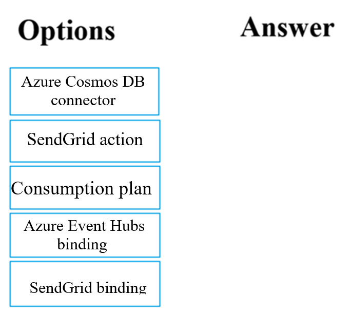
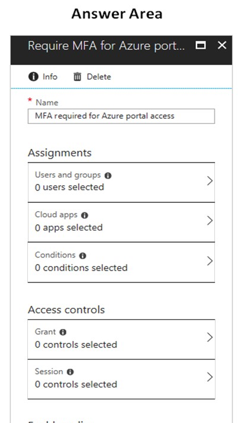
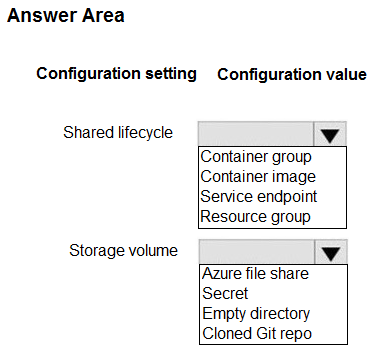

Topic 1 - Question Set 1
You have two Hyper-V hosts named Host1 and Host2. Host1 has an
Azure virtual machine named VM1 that was deployed by using a
custom Azure Resource
Manager template.
You need to
move VM1 to Host2.
What should you do?
- A. From the Update management blade, click Enable.
- B. From the Overview blade, move VM1 to a different subscription.
- C. From the Redeploy blade, click Redeploy.
- D. From the Profile blade, modify the usage location.
DRAG DROP -
You have downloaded an Azure Resource Manager
template to deploy numerous virtual machines. The template is
based on a current virtual machine, but must be adapted to
reference an administrative password.
You need to make
sure that the password is not stored in plain text.
You
are preparing to create the necessary components to achieve
your goal.
Which of the following should you create to
achieve your goal? Answer by dragging the correct option from
the list to the answer area.
Select and Place:

Your company has an Azure Kubernetes Service (AKS) cluster
that you manage from an Azure AD-joined device. The cluster is
located in a resource group.
Developers have created an
application named MyApp. MyApp was packaged into a container
image.
You need to deploy the YAML manifest file for the
application.
Solution: You install the Azure CLI on the
device and run the kubectl apply `"f myapp.yaml command.
Does
this meet the goal?
- A. Yes
- B. No
Your company has an Azure Kubernetes Service (AKS) cluster
that you manage from an Azure AD-joined device. The cluster is
located in a resource group.
Developers have created an
application named MyApp. MyApp was packaged into a container
image.
You need to deploy the YAML manifest file for the
application.
Solution: You install the docker client on
the device and run the docker run -it
microsoft/azure-cli:0.10.17 command.
Does this meet the
goal?
- A. Yes
- B. No
Your company has a web app named WebApp1.
You use the
WebJobs SDK to design a triggered App Service background task
that automatically invokes a function in the code every time
new data is received in a queue.
You are preparing to
configure the service processes a queue data item.
Which
of the following is the service you should use?
- A. Logic Apps
- B. WebJobs
- C. Flow
- D. Functions
Your company has an Azure subscription.
You need to
deploy a number of Azure virtual machines to the subscription
by using Azure Resource Manager (ARM) templates. The virtual
machines will be included in a single availability set.
You
need to ensure that the ARM template allows for as many
virtual machines as possible to remain accessible in the event
of fabric failure or maintenance.
Which of the following
is the value that you should configure for the
platformFaultDomainCount property?
- A. 10
- B. 30
- C. Min Value
- D. Max Value
Your company has an Azure subscription.
You need to
deploy a number of Azure virtual machines to the subscription
by using Azure Resource Manager (ARM) templates. The virtual
machines will be included in a single availability set.
You
need to ensure that the ARM template allows for as many
virtual machines as possible to remain accessible in the event
of fabric failure or maintenance.
Which of the following
is the value that you should configure for the
platformUpdateDomainCount property?
- A. 10
- B. 20
- C. 30
- D. 40
DRAG DROP -
You are creating an Azure Cosmos DB account
that makes use of the SQL API. Data will be added to the
account every day by a web application.
You need to
ensure that an email notification is sent when information is
received from IoT devices, and that compute cost is
reduced.
You decide to deploy a function app.
Which
of the following should you configure the function app to use?
Answer by dragging the correct options from the list to the
answer area.
Select and Place:


This question requires that you evaluate the underlined text
to determine if it is correct.
You company has an
on-premises deployment of MongoDB, and an Azure Cosmos DB
account that makes use of the MongoDB API.
You need to
devise a strategy to migrate MongoDB to the Azure Cosmos DB
account.
You include the Data Management Gateway tool in
your migration strategy.
Instructions: Review the
underlined text. If it makes the statement correct, select `No
change required.` If the statement is incorrect, select the
answer choice that makes the statement correct.
- A. No change required
- B. mongorestore
- C. Azure Storage Explorer
- D. AzCopy
You are developing an e-Commerce Web App.
You want to use
Azure Key Vault to ensure that sign-ins to the e-Commerce Web
App are secured by using Azure App Service authentication and
Azure Active
Directory (AAD).
What should you do on
the e-Commerce Web App?
- A. Run the az keyvault secret command.
- B. Enable Azure AD Connect.
- C. Enable Managed Service Identity (MSI).
- D. Create an Azure AD service principal.
Tema 1 - Conjunto de Preguntas 1
Tienes dos hosts de Hyper-V llamados Host1 y Host2. Host1 tiene una máquina virtual de Azure llamada VM1 que fue implementada mediante una plantilla personalizada de Azure Resource Manager. Necesitas mover VM1 a Host2. ¿Qué deberías hacer?
- A. Desde la hoja de administración de actualizaciones, haz clic en Habilitar.
- B. Desde la hoja General, mueve VM1 a una suscripción diferente.
- C. Desde la hoja de Redistribución, haz clic en Redistribuir.
- D. Desde la hoja de Perfil, modifica la ubicación de uso.
ARRASTRAR Y SOLTAR -
Tienes descargada una plantilla de
Azure Resource Manager para implementar numerosas máquinas
virtuales. La plantilla se basa en una máquina virtual actual,
pero debe adaptarse para hacer referencia a una contraseña
administrativa.
Necesitas asegurarte de que la contraseña
no se almacene en texto plano.
Estás preparando para
crear los componentes necesarios para alcanzar tu objetivo.
¿Qué
deberías crear para lograr tu objetivo? Responde arrastrando
la opción correcta de la lista al área de respuesta.
Selecciona
y Coloca:
Tu empresa tiene un clúster de Azure Kubernetes Service (AKS)
que administras desde un dispositivo unido a Azure AD. El
clúster se encuentra en un grupo de recursos.
Los
desarrolladores han creado una aplicación llamada MyApp. MyApp
se empaquetó en una imagen de contenedor.
Necesitas
implementar el archivo de manifiesto YAML para la
aplicación.
Solución: Instalas Azure CLI en el
dispositivo y ejecutas el comando kubectl apply -f
myapp.yaml.
¿Cumple esto el objetivo?
- A. Sí
- B. No
Tu empresa tiene un clúster de Azure Kubernetes Service (AKS)
que administras desde un dispositivo unido a Azure AD. El
clúster se encuentra en un grupo de recursos.
Los
desarrolladores han creado una aplicación llamada MyApp. MyApp
se empaquetó en una imagen de contenedor.
Necesitas
implementar el archivo de manifiesto YAML para la
aplicación.
Solución: Instalas el cliente de Docker en el
dispositivo y ejecutas el comando docker run -it
microsoft/azure-cli:0.10.17.
¿Cumple esto el objetivo?
- A. Sí
- B. No
Tu empresa tiene una aplicación web llamada WebApp1.
Usas
el SDK de WebJobs para diseñar una tarea en segundo plano de
App Service que se activa automáticamente y llama a una
función en el código cada vez que se recibe un nuevo dato en
una cola.
Te estás preparando para configurar el servicio
que procesa un elemento de datos de la cola.
¿Cuál de los
siguientes servicios debes usar?
- A. Logic Apps
- B. WebJobs
- C. Flow
- D. Functions
Tu empresa tiene una suscripción de Azure.
Necesitas
implementar varias máquinas virtuales de Azure en la
suscripción usando plantillas de Azure Resource Manager (ARM).
Las máquinas virtuales estarán incluidas en un solo conjunto
de disponibilidad.
Necesitas asegurarte de que la
plantilla ARM permita que tantas máquinas virtuales como sea
posible permanezcan accesibles en caso de fallo de hardware o
mantenimiento.
¿Cuál de los siguientes es el valor que
deberías configurar para la propiedad
platformFaultDomainCount?
- A. 10
- B. 30
- C. Valor Mínimo
- D. Valor Máximo
Tu empresa tiene una suscripción de Azure.
Necesitas
implementar varias máquinas virtuales de Azure en la
suscripción usando plantillas de Azure Resource Manager (ARM).
Las máquinas virtuales estarán incluidas en un solo conjunto
de disponibilidad.
Necesitas asegurarte de que la
plantilla ARM permita que tantas máquinas virtuales como sea
posible permanezcan accesibles en caso de fallo de hardware o
mantenimiento.
¿Cuál de los siguientes es el valor que
deberías configurar para la propiedad
platformUpdateDomainCount?
- A. 10
- B. 20
- C. 30
- D. 40
ARRASTRAR Y SOLTAR -
Estás creando una cuenta de Azure
Cosmos DB que utiliza la API de SQL. Todos los días, una
aplicación web añadirá datos a la cuenta.
Necesitas
asegurarte de que se envíe una notificación por correo
electrónico cuando se reciba información de dispositivos IoT,
y de reducir el costo de cómputo.
Decides desplegar una
aplicación de funciones (function app).
¿Cuál de los
siguientes deberías configurar para que la aplicación de
funciones lo use? Responde arrastrando las opciones correctas
de la lista al área de respuestas.
Seleccionar y
colocar:
Esta pregunta requiere que evalúes el texto subrayado para
determinar si es correcto.
Tu empresa tiene una
implementación local de MongoDB y una cuenta de Azure Cosmos
DB que utiliza la API de MongoDB.
Necesitas idear una
estrategia para migrar MongoDB a la cuenta de Azure Cosmos
DB.
Incluyes la herramienta Data Management Gateway en tu
estrategia de migración.
Instrucciones: Revisa el texto
subrayado. Si hace que la afirmación sea correcta, selecciona
`No se requieren cambios`. Si la afirmación es incorrecta,
selecciona la opción de respuesta que haga que la afirmación
sea correcta.
- A. No se requieren cambios
- B. mongorestore
- C. Azure Storage Explorer
- D. AzCopy
Estás desarrollando una aplicación web de comercio
electrónico.
Quieres usar Azure Key Vault para asegurar
que los inicios de sesión en la aplicación web de comercio
electrónico estén protegidos utilizando la autenticación de
Azure App Service y Azure Active Directory (AAD).
¿Qué
deberías hacer en la aplicación web de comercio
electrónico?
- A. Ejecutar el comando az keyvault secret.
- B. Habilitar Azure AD Connect.
- C. Habilitar Identidad de Servicio Administrado (MSI).
- D. Crear un principal de servicio de Azure AD.
This question requires that you evaluate the underlined text
to determine if it is correct.
Your Azure Active
Directory Azure (Azure AD) tenant has an Azure subscription
linked to it.
Your developer has created a mobile
application that obtains Azure AD access tokens using the
OAuth 2 implicit grant type.
The mobile application must
be registered in Azure AD.
You require a redirect URI
from the developer for registration purposes.
Instructions:
Review the underlined text. If it makes the statement correct,
select `No change is needed.` If the statement is incorrect,
select the answer choice that makes the statement correct.
- A. No change required.
- B. a secret
- C. a login hint
- D. a client ID
You are creating an Azure key vault using PowerShell. Objects
deleted from the key vault must be kept for a set period of 90
days.
Which two of the following parameters must be used
in conjunction to meet the requirement? (Choose two.)
- A. EnabledForDeployment
- B. EnablePurgeProtection
- C. EnabledForTemplateDeployment
- D. EnableSoftDelete
HOTSPOT -
You have an Azure Active Directory (Azure AD)
tenant.
You want to implement multi-factor authentication
by making use of a conditional access policy. The conditional
access policy must be applied to all users when they access
the Azure portal.
Which three settings should you
configure? To answer, select the appropriate settings in the
answer area.
NOTE: Each correct selection is worth one
point.
Hot Area:


You manage an Azure SQL database that allows for Azure AD
authentication.
You need to make sure that database
developers can connect to the SQL database via Microsoft SQL
Server Management Studio (SSMS). You also need to make sure
the developers use their on-premises Active Directory account
for authentication. Your strategy should allow for
authentication prompts to be kept to a minimum.
Which of
the following should you implement?
- A. Azure AD token.
- B. Azure Multi-Factor authentication.
- C. Active Directory integrated authentication.
- D. OATH software tokens.

You are developing an application to transfer data between
on-premises file servers and Azure Blob storage. The
application stores keys, secrets, and certificates in Azure
Key Vault and makes use of the Azure Key Vault APIs.
You
want to configure the application to allow recovery of an
accidental deletion of the key vault or key vault objects for
90 days after deletion.
What should you do?
- A. Run the Add-AzKeyVaultKey cmdlet.
- B. Run the az keyvault update --enable-soft-delete true --enable-purge-protection true CLI.
- C. Implement virtual network service endpoints for Azure Key Vault.
- D. Run the az keyvault update --enable-soft-delete false CLI.
HOTSPOT -
You have developed a Web App for your company.
The Web App provides services and must run in multiple
regions.
You want to be notified whenever the Web App
uses more than 85 percent of the available CPU cores over a 5
minute period. Your solution must minimize costs.
Which
command should you use? To answer, select the appropriate
settings in the answer area.
NOTE: Each correct selection
is worth one point.
Hot Area:

Note: The question is included in a number of questions that
depicts the identical set-up. However, every question has a
distinctive result. Establish if the solution satisfies the
requirements.
You are configuring a web app that delivers
streaming video to users. The application makes use of
continuous integration and deployment.
You need to ensure
that the application is highly available and that the users'
streaming experience is constant. You also want to configure
the application to store data in a geographic location that is
nearest to the user.
Solution: You include the use of
Azure Redis Cache in your design.
Does the solution meet
the goal?
- A. Yes
- B. No
Note: The question is included in a number of questions that
depicts the identical set-up. However, every question has a
distinctive result. Establish if the solution satisfies the
requirements.
You are configuring a web app that delivers
streaming video to users. The application makes use of
continuous integration and deployment.
You need to ensure
that the application is highly available and that the users'
streaming experience is constant. You also want to configure
the application to store data in a geographic location that is
nearest to the user.
Solution: You include the use of an
Azure Content Delivery Network (CDN) in your design.
Does
the solution meet the goal?
- A. Yes
- B. No
Note: The question is included in a number of questions that
depicts the identical set-up. However, every question has a
distinctive result. Establish if the solution satisfies the
requirements.
You are configuring a web app that delivers
streaming video to users. The application makes use of
continuous integration and deployment.
You need to ensure
that the application is highly available and that the users'
streaming experience is constant. You also want to configure
the application to store data in a geographic location that is
nearest to the user.
Solution: You include the use of a
Storage Area Network (SAN) in your design.
Does the
solution meet the goal?
- A. Yes
- B. No
You develop a Web App on a tier D1 app service plan.
You
notice that page load times increase during periods of peak
traffic.
You want to implement automatic scaling when CPU
load is above 80 percent. Your solution must minimize
costs.
What should you do first?
- A. Enable autoscaling on the Web App.
- B. Switch to the Premium App Service tier plan.
- C. Switch to the Standard App Service tier plan.
- D. Switch to the Azure App Services consumption plan.
Esta pregunta requiere que evalúes el texto subrayado para
determinar si es correcto.
Tu inquilino de Azure Active
Directory Azure (Azure AD) tiene una suscripción de Azure
vinculada a él.
Tu desarrollador ha creado una aplicación
móvil que obtiene tokens de acceso de Azure AD utilizando el
tipo de concesión implícita de OAuth 2.
La aplicación
móvil debe estar registrada en Azure AD.
Requieres un URI
de redireccionamiento del desarrollador para fines de
registro.
Instrucciones: Revisa el texto subrayado. Si
hace que la afirmación sea correcta, selecciona `No es
necesario cambiarlo.` Si la afirmación es incorrecta,
selecciona la opción de respuesta que haga que la afirmación
sea correcta.
- A. No es necesario cambiarlo.
- B. un secreto
- C. una pista de inicio de sesión
- D. un ID de cliente
Estás creando un almacén de claves de Azure usando PowerShell.
Los objetos eliminados del almacén de claves deben conservarse
durante un período establecido de 90 días.
¿Cuáles dos de
los siguientes parámetros deben usarse en conjunto para
cumplir con el requisito? (Elige dos opciones.)
- A. EnabledForDeployment
- B. EnablePurgeProtection
- C. EnabledForTemplateDeployment
- D. EnableSoftDelete
HOTSPOT -
Tienes un inquilino de Azure Active
Directory (Azure AD).
Deseas implementar la autenticación
multifactorial haciendo uso de una política de acceso
condicional. La política de acceso condicional debe aplicarse
a todos los usuarios cuando acceden al portal de Azure.
¿Qué
tres configuraciones debes establecer? Para responder,
selecciona las configuraciones adecuadas en el área de
respuesta.
NOTA: Cada selección correcta vale un
punto.
HOTSPOT:
Gestionas una base de datos Azure SQL que permite la
autenticación de Azure AD.
Necesitas asegurarte de que
los desarrolladores de la base de datos puedan conectarse a la
base de datos SQL a través de Microsoft SQL Server Management
Studio (SSMS). También necesitas asegurarte de que los
desarrolladores utilicen su cuenta de Active Directory local
para la autenticación. Tu estrategia debería permitir que las
solicitudes de autenticación se mantengan al mínimo.
¿Cuál
de las siguientes opciones deberías implementar?
- A. Token de Azure AD.
- B. Autenticación multifactor de Azure.
- C. Autenticación integrada de Active Directory.
- D. Tokens de software OATH.
Estás desarrollando una aplicación para transferir datos entre
servidores de archivos locales y almacenamiento de blobs de
Azure. La aplicación almacena claves, secretos y certificados
en Azure Key Vault y hace uso de las APIs de Azure Key
Vault.
Quieres configurar la aplicación para permitir la
recuperación de una eliminación accidental del key vault u
objetos del key vault durante 90 días después de la
eliminación.
¿Qué deberías hacer?
- A. Ejecutar el cmdlet Add-AzKeyVaultKey.
- B. Ejecutar el CLI az keyvault update --enable-soft-delete true --enable-purge-protection true.
- C. Implementar puntos de conexión de servicio de red virtual para Azure Key Vault.
- D. Ejecutar el CLI az keyvault update --enable-soft-delete false.
HOTSPOT -
Has desarrollado una aplicación web para
tu empresa. La aplicación web proporciona servicios y debe
ejecutarse en múltiples regiones.
Quieres ser notificado
siempre que la aplicación web utilice más del 85 por ciento de
los núcleos de CPU disponibles durante un período de 5
minutos. Tu solución debe minimizar los costos.
¿Qué
comando deberías usar? Para responder, selecciona la
configuración adecuada en el área de respuesta.
NOTA:
Cada selección correcta vale un punto.
HOTSPOT:
Nota: La pregunta está incluida en una serie de preguntas que
representan la misma configuración. Sin embargo, cada pregunta
tiene un resultado distintivo. Establece si la solución
satisface los requisitos.
Estás configurando una aplicación web que ofrece vídeo en
streaming a los usuarios. La aplicación utiliza integración y
despliegue continuo.
Necesitas asegurarte de que la aplicación esté altamente
disponible y de que la experiencia de streaming de los
usuarios sea constante. También deseas configurar la
aplicación para almacenar datos en una ubicación geográfica
que esté más cerca del usuario.
Solución: Incluyes el uso de Azure Redis Cache en tu
diseño.
¿Cumple la solución con el objetivo?
- A. Sí
- B. No
Nota: La pregunta está incluida en una serie de preguntas que
representan la misma configuración. Sin embargo, cada pregunta
tiene un resultado distintivo. Establece si la solución
satisface los requisitos.
Estás configurando una aplicación web que ofrece vídeo en
streaming a los usuarios. La aplicación utiliza integración y
despliegue continuo.
Necesitas asegurarte de que la aplicación esté altamente
disponible y de que la experiencia de streaming de los
usuarios sea constante. También deseas configurar la
aplicación para almacenar datos en una ubicación geográfica
que esté más cerca del usuario.
Solución: Incluyes el uso de una Red de Distribución de
Contenidos (CDN) de Azure en tu diseño.
¿Cumple la solución con el objetivo?
- A. Sí
- B. No
Nota: La pregunta está incluida en una serie de preguntas que
representan la misma configuración. Sin embargo, cada pregunta
tiene un resultado distintivo. Establece si la solución
satisface los requisitos.
Estás configurando una aplicación web que ofrece vídeo en
streaming a los usuarios. La aplicación utiliza integración y
despliegue continuo.
Necesitas asegurarte de que la aplicación esté altamente
disponible y de que la experiencia de streaming de los
usuarios sea constante. También deseas configurar la
aplicación para almacenar datos en una ubicación geográfica
que esté más cerca del usuario.
Solución: Incluyes el uso de una Red de Área de Almacenamiento
(SAN) de Azure en tu diseño.
¿Cumple la solución con el objetivo?
- A. Sí
- B. No
Desarrollas una aplicación web en un plan de servicio de
aplicaciones de nivel D1.
Observas que los tiempos de carga de la página aumentan
durante los períodos de tráfico máximo.
Quieres implementar escalado automático cuando la carga de la
CPU esté por encima del 80 por ciento. Tu solución debe
minimizar los costos.
¿Qué deberías hacer primero?
- A. Habilitar el escalado automático en la aplicación web.
- B. Cambiar al plan de servicio de aplicaciones Premium.
- C. Cambiar al plan de servicio de aplicaciones Standard.
- D. Cambiar al plan de consumo de Azure App Services.
Your company's Azure subscription includes an Azure Log Analytics workspace.
Your company has a
hundred on-premises servers that run either Windows Server 2012 R2 or Windows Server 2016, and is linked
to the Azure Log Analytics workspace. The Azure Log Analytics workspace is set up to gather performance
counters associated with security from these linked servers.
You must configure alerts based on the
information gathered by the Azure Log Analytics workspace.
You have to make sure that alert rules
allow for dimensions, and that alert creation time should be kept to a minimum. Furthermore, a single
alert notification must be created when the alert is created and when the alert is resolved.
You need
to make use of the necessary signal type when creating the alert rules.
Which of the following is the
option you should use?
- A. The Activity log signal type.
- B. The Application Log signal type.
- C. The Metric signal type.
- D. The Audit Log signal type.
You are developing a .NET Core MVC application that allows customers to research independent holiday
accommodation providers.
You want to implement Azure Search to allow the application to search the
index by using various criteria to locate documents related to accommodation.
You want the
application to allow customers to search the index by using regular expressions.
What should you
do?
- A. Configure the SearchMode property of the SearchParameters class.
- B. Configure the QueryType property of the SearchParameters class.
- C. Configure the Facets property of the SearchParameters class.
- D. Configure the Filter property of the SearchParameters class.
You are a developer at your company.
You need to update the definitions for an existing Logic
App.
What should you use?
- A. the Enterprise Integration Pack (EIP)
- B. the Logic App Code View
- C. the API Connections
- D. the Logic Apps Designer
Note: The question is included in a number of questions that depicts the identical set-up. However,
every question has a distinctive result. Establish if the solution satisfies the requirements.
You
are developing a solution for a public facing API.
The API back end is hosted in an Azure App Service
instance. You have implemented a RESTful service for the API back end.
You must configure back-end
authentication for the API Management service instance.
Solution: You configure Basic gateway
credentials for the Azure resource.
Does the solution meet the goal?
- A. Yes
- B. No
Note: The question is included in a number of questions that depicts the identical set-up. However,
every question has a distinctive result. Establish if the solution satisfies the requirements.
You
are developing a solution for a public facing API.
The API back end is hosted in an Azure App Service
instance. You have implemented a RESTful service for the API back end.
You must configure back-end
authentication for the API Management service instance.
Solution: You configure Client cert gateway
credentials for the HTTP(s) endpoint.
Does the solution meet the goal?
- A. Yes
- B. No
Note: The question is included in a number of questions that depicts the identical set-up. However,
every question has a distinctive result. Establish if the solution satisfies the requirements.
You
are developing a solution for a public facing API.
The API back end is hosted in an Azure App Service
instance. You have implemented a RESTful service for the API back end.
You must configure back-end
authentication for the API Management service instance.
Solution: You configure Basic gateway
credentials for the HTTP(s) endpoint.
Does the solution meet the goal?
- A. Yes
- B. No
Note: The question is included in a number of questions that depicts the identical set-up. However,
every question has a distinctive result. Establish if the solution satisfies the requirements.
You
are developing a solution for a public facing API.
The API back end is hosted in an Azure App Service
instance. You have implemented a RESTful service for the API back end.
You must configure back-end
authentication for the API Management service instance.
Solution: You configure Client cert gateway
credentials for the Azure resource.
Does the solution meet the goal?
- A. Yes
- B. No
You are developing a .NET Core MVC application that allows customers to research independent holiday
accommodation providers.
You want to implement Azure Search to allow the application to search the
index by using various criteria to locate documents related to accommodation venues.
You want the
application to list holiday accommodation venues that fall within a specific price range and are within
a specified distance to an airport.
What should you do?
- A. Configure the SearchMode property of the SearchParameters class.
- B. Configure the QueryType property of the SearchParameters class.
- C. Configure the Facets property of the SearchParameters class.
- D. Configure the Filter property of the SearchParameters class.
You are a developer at your company.
You need to edit the workflows for an existing Logic
App.
What should you use?
- A. the Enterprise Integration Pack (EIP)
- B. the Logic App Code View
- C. the API Connections
- D. the Logic Apps Designer
DRAG DROP -
You are a developer for a company that provides a bookings management service in the
tourism industry. You are implementing Azure Search for the tour agencies listed in your company's
solution.
You create the index in Azure Search. You now need to use the Azure Search .NET SDK to
import the relevant data into the Azure Search service.
Which three actions should you perform in
sequence? To answer, move the appropriate actions from the list of actions from left to right and
arrange them in the correct order.
Select and Place:
La suscripción de Azure de tu empresa incluye un espacio de trabajo de Azure Log Analytics.
Tu
empresa tiene cien servidores locales que ejecutan Windows Server 2012 R2 o Windows Server 2016, y están
vinculados al espacio de trabajo de Azure Log Analytics. El espacio de trabajo de Azure Log Analytics
está configurado para recopilar contadores de rendimiento asociados con la seguridad de estos servidores
vinculados.
Debes configurar alertas basadas en la información recopilada por el espacio de trabajo
de Azure Log Analytics.
Debes asegurarte de que las reglas de alerta permitan dimensiones y que el
tiempo de creación de alerta se mantenga al mínimo. Además, se debe crear una única notificación de
alerta cuando se crea la alerta y cuando se resuelve.
Necesitas hacer uso del tipo de señal
necesario al crear las reglas de alerta.
¿Cuál de las siguientes opciones deberías usar?
- A. El tipo de señal de registro de actividad.
- B. El tipo de señal de registro de aplicación.
- C. El tipo de señal de métrica.
- D. El tipo de señal de registro de auditoría.
Estás desarrollando una aplicación MVC de .NET Core que permite a los clientes investigar proveedores de
alojamiento vacacional independientes.
Quieres implementar Azure Search para permitir que la
aplicación busque el índice utilizando varios criterios para localizar documentos relacionados con
alojamiento.
Quieres que la aplicación permita a los clientes buscar el índice utilizando
expresiones regulares.
¿Qué deberías hacer?
- A. Configurar la propiedad SearchMode de la clase SearchParameters.
- B. Configurar la propiedad QueryType de la clase SearchParameters.
- C. Configurar la propiedad Facets de la clase SearchParameters.
- D. Configurar la propiedad Filter de la clase SearchParameters.
Eres un desarrollador en tu empresa.
Necesitas actualizar las definiciones para una Logic App
existente.
¿Qué deberías usar?
- A. el Paquete de Integración Empresarial (EIP)
- B. la Vista de Código de Logic App
- C. las Conexiones de API
- D. el Diseñador de Logic Apps
Nota: La pregunta está incluida en una serie de preguntas que representan la misma configuración. Sin
embargo, cada pregunta tiene un resultado distintivo. Establece si la solución satisface los
requisitos.
Estás desarrollando una solución para una API de cara al público.
El back end de la
API está alojado en una instancia de Azure App Service. Has implementado un servicio RESTful para el
back end de la API.
Debes configurar la autenticación del back-end para la instancia del servicio de
administración de API.
Solución: Configuras credenciales de puerta de enlace básicas para el recurso
de Azure.
¿Cumple la solución con el objetivo?
- A. Sí
- B. No
Nota: La pregunta está incluida en una serie de preguntas que representan la misma configuración. Sin
embargo, cada pregunta tiene un resultado distintivo. Establece si la solución satisface los
requisitos.
Estás desarrollando una solución para una API de cara al público.
El back-end de la
API está alojado en una instancia de Azure App Service. Has implementado un servicio RESTful para el
back-end de la API.
Debes configurar la autenticación del back-end para la instancia del servicio de
administración de API.
Solución: Configuras credenciales de puerta de enlace de certificado de
cliente para el punto de conexión HTTP(s).
¿Cumple la solución con el objetivo?
- A. Sí
- B. No
Nota: La pregunta está incluida en una serie de preguntas que representan la misma configuración. Sin
embargo, cada pregunta tiene un resultado distintivo. Establece si la solución satisface los
requisitos.
Estás desarrollando una solución para una API de cara al público.
El back-end de la
API está alojado en una instancia de Azure App Service. Has implementado un servicio RESTful para el
back-end de la API.
Debes configurar la autenticación del back-end para la instancia del servicio de
administración de API.
Solución: Configuras credenciales de puerta de enlace básica para el punto de
conexión HTTP(s).
¿Cumple la solución con el objetivo?
- A. Sí
- B. No
Nota: La pregunta está incluida en una serie de preguntas que representan la misma configuración. Sin
embargo, cada pregunta tiene un resultado distintivo. Establece si la solución satisface los
requisitos.
Estás desarrollando una solución para una API de cara al público.
El back-end de la
API está alojado en una instancia de Azure App Service. Has implementado un servicio RESTful para el
back-end de la API.
Debes configurar la autenticación del back-end para la instancia del servicio de
administración de API.
Solución: Configuras credenciales de puerta de enlace de certificado de
cliente para el recurso de Azure.
¿Cumple la solución con el objetivo?
- A. Sí
- B. No
Estás desarrollando una aplicación .NET Core MVC que permite a los clientes investigar proveedores de
alojamiento vacacional independientes.
Quieres implementar Azure Search para permitir que la
aplicación busque en el índice utilizando varios criterios para localizar documentos relacionados con
lugares de alojamiento.
Deseas que la aplicación liste lugares de alojamiento vacacional que se
encuentren dentro de un rango de precios específico y estén dentro de una distancia especificada a un
aeropuerto.
¿Qué deberías hacer?
- A. Configurar la propiedad SearchMode de la clase SearchParameters.
- B. Configurar la propiedad QueryType de la clase SearchParameters.
- C. Configurar la propiedad Facets de la clase SearchParameters.
- D. Configurar la propiedad Filter de la clase SearchParameters.
Eres un desarrollador en tu empresa.
Necesitas editar los flujos de trabajo para una Logic App
existente.
¿Qué deberías usar?
- A. el Paquete de Integración Empresarial (EIP)
- B. la Vista de Código de Logic App
- C. las Conexiones de API
- D. el Diseñador de Logic Apps
ARRASTRA Y SUELTA -
Eres un desarrollador para una empresa que proporciona un servicio de gestión de
reservas en la industria del turismo. Estás implementando Azure Search para las agencias de turismo
enumeradas en la solución de tu empresa.
Creas el índice en Azure Search. Ahora necesitas usar el SDK
de Azure Search .NET para importar los datos relevantes en el servicio de Azure Search.
¿Qué tres
acciones deberías realizar en secuencia? Para responder, mueve las acciones apropiadas de la lista de
acciones de izquierda a derecha y arréjalas en el orden correcto.
Selecciona y Coloca:
You are developing an application that applies a set of governance policies for
internal and external services, as well as for applications.
You develop a
stateful ASP.NET Core 2.1 web application named PolicyApp and deploy it to an Azure
App Service Web App. The PolicyApp reacts to events from
Azure Event Grid and
performs policy actions based on those events.
You have the following
requirements:
✑ Authentication events must be used to monitor users when they
sign in and sign out.
✑ All authentication events must be processed by
PolicyApp.
✑ Sign outs must be processed as fast as possible.
What should you
do?
- A. Create a new Azure Event Grid subscription for all authentication events. Use the subscription to process sign-out events.
- B. Create a separate Azure Event Grid handler for sign-in and sign-out events.
- C. Create separate Azure Event Grid topics and subscriptions for sign-in and sign-out events.
- D. Add a subject prefix to sign-out events. Create an Azure Event Grid subscription. Configure the subscription to use the subjectBeginsWith filter.
HOTSPOT -
You are developing a C++ application that compiles to a native
application named process.exe. The application accepts images as input and returns
images in one of the following image formats: GIF, PNG, or JPEG.
You must deploy
the application as an Azure Function.
You need to configure the function and host
json files.
How should you complete the json files? To answer, select the
appropriate options in the answer area.
NOTE: Each correct selection is worth one
point.
Hot Area:

HOTSPOT
-
You are developing an Azure Static Web app that contains
training materials for a tool company. Each tool’s training material is contained in
a static web page that is linked from the tool’s publicly available description
page.
A user must be authenticated using Azure AD prior to viewing
training.
You need to ensure that the user can view training material pages
after authentication.
How should you complete the configuration file? To
answer, select the appropriate options in the answer area.
NOTE: Each correct
selection is worth one point.

HOTSPOT
-
You are authoring a set of nested Azure Resource Manager
templates to deploy Azure resources. You author an Azure Resource Manager template
named mainTemplate.json that contains the following linked templates:
linkedTemplate1.json, linkedTemplate2.json.
You add parameters to a
parameters template file named mainTemplate.parameters,json. You save all templates
on a local device in the C:\templates\ folder.
You have the following
requirements:
• Store the templates in Azure for later deployment.
•
Enable versioning of the templates.
• Manage access to the templates by using
Azure RBAC.
• Ensure that users have read-only access to the templates.
•
Allow users to deploy the templates.
You need to store the templates in
Azure.
How should you complete the command? To answer, select the appropriate
options in the answer area.
NOTE: Each correct selection is worth one
point.
HOTSPOT
-
You are developing a service where customers can report news
events from a browser using Azure Web PubSub. The service is implemented as an Azure
Function App that uses the JSON WebSocket subprotocol to receive news
events.
You need to implement the bindings for the Azure Function
App.
How should you configure the binding? To answer, select the appropriate
options in the answer area.
NOTE: Each correct selection is worth one
point.

HOTSPOT
-
You are building a software-as-a-service (SaaS) application
that analyzes DNA data that will run on Azure virtual machines (VMs) in an
availability zone. The data is stored on managed disks attached to the VM. The
performance of the analysis is determined by the speed of the disk attached to the
VM.
You have the following requirements:
• The application must be
able to quickly revert to the previous day’s data if a systemic error is
detected.
• The application must minimize downtime in the case of an Azure
datacenter outage.
You need to provision the managed disk for the VM to
maximize performance while meeting the requirements.
Which type of Azure
Managed Disk should you use? To answer, select the appropriate options in the answer
area.
NOTE: Each correct selection is worth one point.
HOTSPOT
-
You are developing an application that includes two Docker
containers.
The application must meet the following requirements:
•
The containers must not run as root.
• The containers must be deployed to Azure
Container Instances by using a YAML file.
• The containers must share a
lifecycle, resources, local network, and storage volume.
• The storage volume
must persist through container crashes.
• The storage volume must be deployed on
stop or restart of the containers.
You need to configure Azure Container
Instances for the application.
Which configuration values should you use? To
answer, select the appropriate options in the answer area.
NOTE: Each correct
selection is worth one point.


Topic 2 - Question Set 2
HOTSPOT -
You are implementing a software as a service (SaaS) ASP.NET Core web
service that will run as an Azure Web App. The web service will use an
on-premises
SQL Server database for storage. The web service also includes a
WebJob that processes data updates. Four customers will use the web service.
✑
Each instance of the WebJob processes data for a single customer and must run as a
singleton instance.
✑ Each deployment must be tested by using deployment slots
prior to serving production data.
✑ Azure costs must be minimized.
✑ Azure
resources must be located in an isolated network.
You need to configure the App
Service plan for the Web App.
How should you configure the App Service plan? To
answer, select the appropriate settings in the answer area.
NOTE: Each correct
selection is worth one point.
Hot Area:

DRAG DROP -
You are a developer for a software as a service (SaaS) company that
uses an Azure Function to process orders. The Azure Function currently runs on an
Azure
Function app that is triggered by an Azure Storage queue.
You are
preparing to migrate the Azure Function to Kubernetes using Kubernetes-based Event
Driven Autoscaling (KEDA).
You need to configure Kubernetes Custom Resource
Definitions (CRD) for the Azure Function.
Which CRDs should you configure? To
answer, drag the appropriate CRD types to the correct locations. Each CRD type may
be used once, more than once, or not at all. You may need to drag the split bar
between panes or scroll to view content.
NOTE: Each correct selection is worth
one point.
Select and Place:

HOTSPOT -
You are creating a CLI script that creates an Azure web app and related
services in Azure App Service. The web app uses the following variables:
You need to
automatically deploy code from GitHub to the newly created web app.
How should
you complete the script? To answer, select the appropriate options in the answer
area.
NOTE: Each correct selection is worth one point.
Hot Area:
Estás desarrollando una aplicación que aplica un conjunto de políticas de gobernanza
para servicios internos y externos, así como para aplicaciones.
Desarrollas una
aplicación web ASP.NET Core 2.1 con estado llamada PolicyApp y la implementas en un
Azure App Service Web App. La PolicyApp reacciona a eventos de Azure Event Grid y
realiza acciones de política basadas en esos eventos.
Tienes los siguientes
requisitos:
✑ Los eventos de autenticación deben usarse para monitorear a los
usuarios cuando inician y cierran sesión.
✑ Todos los eventos de autenticación
deben ser procesados por PolicyApp.
✑ Las salidas deben ser procesadas lo más
rápido posible.
¿Qué deberías hacer?
- A. Crear una nueva suscripción de Azure Event Grid para todos los eventos de autenticación. Utiliza la suscripción para procesar los eventos de cierre de sesión.
- B. Crear un controlador de Azure Event Grid separado para los eventos de inicio de sesión y cierre de sesión.
- C. Crear temas y suscripciones separadas de Azure Event Grid para los eventos de inicio de sesión y cierre de sesión.
- D. Agregar un prefijo de sujeto a los eventos de cierre de sesión. Crear una suscripción de Azure Event Grid. Configurar la suscripción para usar el filtro subjectBeginsWith.
HOTSPOT -
Estás desarrollando una aplicación C++ que se compila en una
aplicación nativa llamada process.exe. La aplicación acepta imágenes como entrada y
devuelve imágenes en uno de los siguientes formatos de imagen: GIF, PNG o
JPEG.
Debes implementar la aplicación como una Función de Azure.
Necesitas
configurar los archivos json de la función y del host.
¿Cómo deberías completar
los archivos json? Para responder, selecciona las opciones apropiadas en el área de
respuesta.
NOTA: Cada selección correcta vale un punto.
HOTSPOT:
HOTSPOT -
Estás desarrollando una aplicación web estática de Azure que
contiene materiales de capacitación para una empresa de herramientas. El material de
capacitación de cada herramienta está contenido en una página web estática que está
vinculada desde la página de descripción pública de la herramienta.
Un
usuario debe estar autenticado usando Azure AD antes de ver la
capacitación.
Necesitas asegurarte de que el usuario pueda ver las páginas de
material de capacitación después de la autenticación.
¿Cómo deberías
completar el archivo de configuración? Para responder, selecciona las opciones
apropiadas en el área de respuesta.
NOTA: Cada selección correcta vale un
punto.
HOTSPOT -
Estás creando un conjunto de plantillas anidadas de Azure
Resource Manager para implementar recursos de Azure. Creas una plantilla de Azure
Resource Manager llamada mainTemplate.json que contiene las siguientes plantillas
vinculadas: linkedTemplate1.json, linkedTemplate2.json.
Agregas parámetros a
un archivo de plantilla de parámetros llamado mainTemplate.parameters,json. Guardas
todas las plantillas en un dispositivo local en la carpeta
C:\templates\.
Tienes los siguientes requisitos:
• Almacenar las
plantillas en Azure para su implementación posterior.
• Habilitar la versión de
las plantillas.
• Administrar el acceso a las plantillas mediante Azure
RBAC.
• Asegurar que los usuarios tengan acceso de solo lectura a las
plantillas.
• Permitir que los usuarios implementen las
plantillas.
Necesitas almacenar las plantillas en Azure.
¿Cómo
deberías completar el comando? Para responder, selecciona las opciones apropiadas en
el área de respuesta.
NOTA: Cada selección correcta vale un
punto.
HOTSPOT -
Estás desarrollando un servicio donde los clientes pueden
informar eventos de noticias desde un navegador usando Azure Web PubSub. El servicio
está implementado como una Azure Function App que utiliza el subprotocolo JSON
WebSocket para recibir eventos de noticias.
Necesitas implementar los enlaces
para la Azure Function App.
¿Cómo deberías configurar el enlace? Para
responder, selecciona las opciones apropiadas en el área de respuesta.
NOTA:
Cada selección correcta vale un punto.
HOTSPOT -
Estás construyendo una aplicación de software como servicio
(SaaS) que analiza datos de ADN que se ejecutará en máquinas virtuales (VM) de Azure
en una zona de disponibilidad. Los datos se almacenan en discos administrados
conectados a la VM. El rendimiento del análisis está determinado por la velocidad
del disco adjunto a la VM.
Tienes los siguientes requisitos:
• La
aplicación debe poder revertir rápidamente a los datos del día anterior si se
detecta un error sistémico.
• La aplicación debe minimizar el tiempo de
inactividad en caso de una interrupción del centro de datos de
Azure.
Necesitas aprovisionar el disco administrado para la VM para maximizar
el rendimiento y cumplir con los requisitos.
¿Qué tipo de Disco Administrado
de Azure deberías usar? Para responder, selecciona las opciones apropiadas en el
área de respuesta.
NOTA: Cada selección correcta vale un punto.
HOTSPOT -
Estás desarrollando una aplicación que incluye dos
contenedores Docker.
La aplicación debe cumplir con los siguientes
requisitos:
• Los contenedores no deben ejecutarse como root.
• Los
contenedores deben implementarse en Azure Container Instances mediante un archivo
YAML.
• Los contenedores deben compartir un ciclo de vida, recursos, red local y
volumen de almacenamiento.
• El volumen de almacenamiento debe persistir en caso
de fallos del contenedor.
• El volumen de almacenamiento debe implementarse al
detener o reiniciar los contenedores.
Necesitas configurar Azure Container
Instances para la aplicación.
¿Qué valores de configuración deberías usar?
Para responder, selecciona las opciones apropiadas en el área de
respuesta.
NOTA: Cada selección correcta vale un punto.
Topic 2 - Question Set 2
HOTSPOT -
Estás implementando un servicio web de software como servicio (SaaS) ASP.NET Core
que se ejecutará como una Aplicación Web de Azure. El servicio web usará una base de datos
SQL Server local para almacenamiento. El servicio web también incluye un WebJob que procesa
actualizaciones de datos. Cuatro clientes usarán el servicio web.
✑ Cada instancia del
WebJob procesa datos para un solo cliente y debe ejecutarse como una instancia única.
✑
Cada implementación debe probarse usando ranuras de implementación antes de servir datos de
producción.
✑ Los costos de Azure deben minimizarse.
✑ Los recursos de Azure deben
ubicarse en una red aislada.
Necesitas configurar el plan de servicio de aplicaciones para
la Aplicación Web.
¿Cómo deberías configurar el plan de servicio de aplicaciones? Para
responder, selecciona las configuraciones apropiadas en el área de respuestas.
NOTA: Cada
selección correcta vale un punto.
Área activa:
DRAG DROP -
Eres un desarrollador para una empresa de software como servicio
(SaaS) que utiliza una Azure Function para procesar pedidos. La Azure Function
actualmente se ejecuta en una aplicación Azure Function que es activada por una cola
de almacenamiento de Azure.
Te estás preparando para migrar la Azure Function a
Kubernetes usando el escalado automático basado en eventos de Kubernetes
(KEDA).
Necesitas configurar Definiciones de Recursos Personalizadas (CRD) de
Kubernetes para la Azure Function.
¿Qué CRDs deberías configurar? Para responder,
arrastra los tipos de CRD apropiados a las ubicaciones correctas. Cada tipo de CRD
puede ser utilizado una vez, más de una vez, o no ser utilizado en absoluto. Puede
que necesites arrastrar la barra de división entre los paneles o hacer scroll para
ver el contenido.
NOTA: Cada selección correcta vale un punto.
Selecciona y
Coloca:
HOTSPOT -
Estás creando un script CLI que crea una aplicación web Azure y
servicios relacionados en Azure App Service. La aplicación web utiliza las
siguientes variables:
Necesitas
implementar automáticamente el código desde
GitHub a la aplicación web recién creada.
¿Cómo deberías completar el script?
Para responder, selecciona las opciones apropiadas en el área de respuesta.
NOTA:
Cada selección correcta vale un punto.
HOTSPOT:
Note: This question is part of a series of questions that present the same scenario.
Each question in the series contains a unique solution that might meet the stated
goals. Some question sets might have more than one correct solution, while others
might not have a correct solution.
After you answer a question in this section,
you will NOT be able to return to it. As a result, these questions will not appear
in the review screen.
You develop a software as a service (SaaS) offering to
manage photographs. Users upload photos to a web service which then stores the
photos in Azure
Storage Blob storage. The storage account type is General-purpose
V2.
When photos are uploaded, they must be processed to produce and save a
mobile-friendly version of the image. The process to produce a mobile-friendly
version of the image must start in less than one minute.
You need to design the
process that starts the photo processing.
Solution: Trigger the photo processing
from Blob storage events.
Does the solution meet the goal?
- A. Yes
- B. No
Note: This question is part of a series of questions that present the same scenario.
Each question in the series contains a unique solution that might meet the stated
goals. Some question sets might have more than one correct solution, while others
might not have a correct solution.
After you answer a question in this section,
you will NOT be able to return to it. As a result, these questions will not appear
in the review screen.
You develop and deploy an Azure App Service API app to a
Windows-hosted deployment slot named Development. You create additional deployment
slots named Testing and Production. You enable auto swap on the Production
deployment slot.
You need to ensure that scripts run and resources are available
before a swap operation occurs.
Solution: Update the web.config file to include
the applicationInitialization configuration element. Specify custom initialization
actions to run the scripts.
Does the solution meet the goal?
- A. No
- B. Yes
Note: This question is part of a series of questions that present the same scenario.
Each question in the series contains a unique solution that might meet the stated
goals. Some question sets might have more than one correct solution, while others
might not have a correct solution.
After you answer a question in this section,
you will NOT be able to return to it. As a result, these questions will not appear
in the review screen.
You develop and deploy an Azure App Service API app to a
Windows-hosted deployment slot named Development. You create additional deployment
slots named Testing and Production. You enable auto swap on the Production
deployment slot.
You need to ensure that scripts run and resources are available
before a swap operation occurs.
Solution: Enable auto swap for the Testing slot.
Deploy the app to the Testing slot.
Does the solution meet the goal?
- A. No
- B. Yes
Note: This question is part of a series of questions that present the same scenario.
Each question in the series contains a unique solution that might meet the stated
goals. Some question sets might have more than one correct solution, while others
might not have a correct solution.
After you answer a question in this section,
you will NOT be able to return to it. As a result, these questions will not appear
in the review screen.
You develop and deploy an Azure App Service API app to a
Windows-hosted deployment slot named Development. You create additional deployment
slots named Testing and Production. You enable auto swap on the Production
deployment slot.
You need to ensure that scripts run and resources are available
before a swap operation occurs.
Solution: Disable auto swap. Update the app with
a method named statuscheck to run the scripts. Re-enable auto swap and deploy the
app to the Production slot.
Does the solution meet the goal?
- A. No
- B. Yes
Note: This question is part of a series of questions that present the same scenario.
Each question in the series contains a unique solution that might meet the stated
goals. Some question sets might have more than one correct solution, while others
might not have a correct solution.
After you answer a question in this section,
you will NOT be able to return to it. As a result, these questions will not appear
in the review screen.
You develop a software as a service (SaaS) offering to
manage photographs. Users upload photos to a web service which then stores the
photos in Azure
Storage Blob storage. The storage account type is General-purpose
V2.
When photos are uploaded, they must be processed to produce and save a
mobile-friendly version of the image. The process to produce a mobile-friendly
version of the image must start in less than one minute.
You need to design the
process that starts the photo processing.
Solution: Convert the Azure Storage
account to a BlockBlobStorage storage account.
Does the solution meet the
goal?
- A. Yes
- B. No
HOTSPOT -
You are developing an Azure Web App. You configure TLS mutual
authentication for the web app.
You need to validate the client certificate in
the web app. To answer, select the appropriate options in the answer area.
NOTE:
Each correct selection is worth one point.
Hot Area:

DRAG DROP -
You are developing a Docker/Go using Azure App Service Web App for
Containers. You plan to run the container in an App Service on Linux. You identify
a
Docker container image to use.
None of your current resource groups reside
in a location that supports Linux. You must minimize the number of resource groups
required.
You need to create the application and perform an initial
deployment.
Which three Azure CLI commands should you use to develop the
solution? To answer, move the appropriate commands from the list of commands to the
answer area and arrange them in the correct order.
Select and Place:

DRAG DROP -
Fourth Coffee has an ASP.NET Core web app that runs in Docker. The
app is mapped to the www.fourthcoffee.com domain.
Fourth Coffee is migrating this
application to Azure.
You need to provision an App Service Web App to host this
docker image and map the custom domain to the App Service web app.
A resource
group named FourthCoffeePublicWebResourceGroup has been created in the WestUS region
that contains an App Service Plan named
AppServiceLinuxDockerPlan.
Which order
should the CLI commands be used to develop the solution? To answer, move all of the
Azure CLI commands from the list of commands to the answer area and arrange them in
the correct order.
Select and Place:

DRAG DROP -
You are developing a serverless Java application on Azure. You create
a new Azure Key Vault to work with secrets from a new Azure Functions
application.
The application must meet the following requirements:
✑ Reference
the Azure Key Vault without requiring any changes to the Java code.
✑ Dynamically
add and remove instances of the Azure Functions host based on the number of incoming
application events.
✑ Ensure that instances are perpetually warm to avoid any
cold starts.
✑ Connect to a VNet.
✑ Authentication to the Azure Key Vault
instance must be removed if the Azure Function application is deleted.
You need
to grant the Azure Functions application access to the Azure Key Vault.
Which
three actions should you perform in sequence? To answer, move the appropriate
actions from the list of actions to the answer area and arrange them in the correct
order.
Select and Place:
You develop a website. You plan to host the website in Azure. You expect the website
to experience high traffic volumes after it is published.
You must ensure that
the website remains available and responsive while minimizing cost.
You need to
deploy the website.
What should you do?
- A. Deploy the website to a virtual machine. Configure the virtual machine to automatically scale when the CPU load is high.
- B. Deploy the website to an App Service that uses the Shared service tier. Configure the App Service plan to automatically scale when the CPU load is high.
- C. Deploy the website to a virtual machine. Configure a Scale Set to increase the virtual machine instance count when the CPU load is high.
- D. Deploy the website to an App Service that uses the Standard service tier. Configure the App Service plan to automatically scale when the CPU load is high.
Nota: Esta pregunta es parte de una serie de preguntas que presentan el mismo
escenario. Cada pregunta en la serie contiene una solución única que podría cumplir
con los objetivos establecidos. Algunos conjuntos de preguntas podrían tener más de
una solución correcta, mientras que otros podrían no tener una solución
correcta.
Después de responder una pregunta en esta sección, NO podrás volver a
ella. Como resultado, estas preguntas no aparecerán en la pantalla de
revisión.
Desarrollas una oferta de software como servicio (SaaS) para gestionar
fotografías. Los usuarios cargan fotos a un servicio web que luego almacena las
fotos en Azure Storage Blob storage. El tipo de cuenta de almacenamiento es
General-purpose V2.
Cuando se cargan las fotos, deben procesarse para producir y
guardar una versión compatible con dispositivos móviles de la imagen. El proceso
para producir una versión compatible con dispositivos móviles de la imagen debe
iniciarse en menos de un minuto.
Necesitas diseñar el proceso que inicie el
procesamiento de fotos.
Solución: Desencadenar el procesamiento de fotos desde
los eventos de Blob storage.
¿Cumple la solución con el objetivo?
- A. Sí
- B. No
Nota: Esta pregunta es parte de una serie de preguntas que presentan el mismo
escenario. Cada pregunta en la serie contiene una solución única que podría cumplir
con los objetivos establecidos. Algunos conjuntos de preguntas podrían tener más de
una solución correcta, mientras que otros podrían no tener una solución
correcta.
Después de responder una pregunta en esta sección, NO podrás volver a
ella. Como resultado, estas preguntas no aparecerán en la pantalla de
revisión.
Desarrollas y despliegas una aplicación API de Azure App Service en un
espacio de implementación alojado en Windows llamado Desarrollo. Creas espacios de
implementación adicionales llamados Pruebas y Producción. Habilitas el intercambio
automático en el espacio de implementación Producción.
Necesitas asegurarte de
que los scripts se ejecuten y los recursos estén disponibles antes de que ocurra una
operación de intercambio.
Solución: Actualiza el archivo web.config para incluir
el elemento de configuración applicationInitialization. Especifica acciones de
inicialización personalizadas para ejecutar los scripts.
¿Cumple la solución con
el objetivo?
- A. No
- B. Sí
Nota: Esta pregunta es parte de una serie de preguntas que presentan el mismo
escenario. Cada pregunta en la serie contiene una solución única que podría cumplir
con los objetivos establecidos. Algunos conjuntos de preguntas podrían tener más de
una solución correcta, mientras que otros podrían no tener una solución
correcta.
Después de responder una pregunta en esta sección, NO podrás volver a
ella. Como resultado, estas preguntas no aparecerán en la pantalla de
revisión.
Desarrollas y despliegas una aplicación API de Azure App Service en un
espacio de implementación alojado en Windows llamado Desarrollo. Creas espacios de
implementación adicionales llamados Pruebas y Producción. Habilitas el intercambio
automático en el espacio de implementación Producción.
Necesitas asegurarte de
que los scripts se ejecuten y los recursos estén disponibles antes de que ocurra una
operación de intercambio.
Solución: Habilita el intercambio automático para el
espacio de implementación Pruebas. Despliega la aplicación en el espacio de
implementación Pruebas.
¿Cumple la solución con el objetivo?
- A. No
- B. Sí
Nota: Esta pregunta es parte de una serie de preguntas que presentan el mismo
escenario. Cada pregunta en la serie contiene una solución única que podría cumplir
con los objetivos establecidos. Algunos conjuntos de preguntas podrían tener más de
una solución correcta, mientras que otros podrían no tener una solución
correcta.
Después de responder una pregunta en esta sección, NO podrás volver a
ella. Como resultado, estas preguntas no aparecerán en la pantalla de
revisión.
Desarrollas y despliegas una aplicación API de Azure App Service en un
espacio de implementación alojado en Windows llamado Desarrollo. Creas espacios de
implementación adicionales llamados Pruebas y Producción. Habilitas el intercambio
automático en el espacio de implementación Producción.
Necesitas asegurarte de
que los scripts se ejecuten y los recursos estén disponibles antes de que ocurra una
operación de intercambio.
Solución: Deshabilita el intercambio automático.
Actualiza la aplicación con un método llamado statuscheck para ejecutar los scripts.
Vuelve a habilitar el intercambio automático y despliega la aplicación en el espacio
de implementación Producción.
¿Cumple la solución con el objetivo?
- A. No
- B. Sí
Nota: Esta pregunta es parte de una serie de preguntas que presentan el mismo
escenario. Cada pregunta en la serie contiene una solución única que podría cumplir
con los objetivos establecidos. Algunos conjuntos de preguntas podrían tener más de
una solución correcta, mientras que otros podrían no tener una solución
correcta.
Desarrollas una oferta de software como servicio (SaaS) para
administrar fotografías. Los usuarios cargan fotos en un servicio web que luego
almacena las fotos en el almacenamiento de blobs de Azure. El tipo de cuenta de
almacenamiento es General-purpose V2.
Cuando se cargan fotos, deben procesarse
para producir y guardar una versión compatible con dispositivos móviles de la
imagen. El proceso para producir una versión compatible con dispositivos móviles de
la imagen debe comenzar en menos de un minuto.
Necesitas diseñar el proceso que
inicia el procesamiento de fotos.
Solución: Convierte la cuenta de almacenamiento
de Azure a una cuenta de almacenamiento BlockBlobStorage.
¿Cumple la solución con
el objetivo?
- A. Sí
- B. No
HOTSPOT -
Estás desarrollando una aplicación web de Azure. Configuras la
autenticación mutua de TLS para la aplicación web.
Necesitas validar el
certificado del cliente en la aplicación web. Para responder, selecciona las
opciones apropiadas en el área de respuesta.
NOTA: Cada selección correcta vale
un punto.
HOTSPOT:
ARRASTRAR Y SOLTAR -
Estás desarrollando una aplicación Docker/Go utilizando
Azure App Service Web App para Contenedores. Planeas ejecutar el contenedor en un
App Service en Linux. Identificas una
imagen de contenedor Docker para
usar.
Ninguno de tus grupos de recursos actuales reside en una ubicación que
admita Linux. Debes minimizar el número de grupos de recursos
requeridos.
Necesitas crear la aplicación y realizar una implementación
inicial.
¿Qué tres comandos de Azure CLI deberías usar para desarrollar la
solución? Para responder, mueve los comandos apropiados de la lista de comandos al
área de respuesta y arrástralos en el orden correcto.
Seleccionar y
Colocar:
ARRASTRAR Y SOLTAR -
Fourth Coffee tiene una aplicación web ASP.NET Core que se
ejecuta en Docker. La aplicación está mapeada al dominio
www.fourthcoffee.com.
Fourth Coffee está migrando esta aplicación a
Azure.
Debes aprovisionar una aplicación web de App Service para alojar esta
imagen de Docker y mapear el dominio personalizado a la aplicación web de App
Service.
Se ha creado un grupo de recursos llamado
FourthCoffeePublicWebResourceGroup en la región WestUS que contiene un Plan de App
Service llamado
AppServiceLinuxDockerPlan.
¿En qué orden deben utilizarse los
comandos de la CLI para desarrollar la solución? Para responder, mueve todos los
comandos de la CLI de Azure de la lista de comandos al área de respuesta y ordénalos
en el orden correcto.
Seleccionar y Colocar:
ARRASTRAR Y SOLTAR -
Estás desarrollando una aplicación Java sin servidor en
Azure. Creas un nuevo Azure Key Vault para trabajar con secretos desde una nueva
aplicación de Azure Functions.
La aplicación debe cumplir con los siguientes
requisitos:
✑ Hacer referencia al Azure Key Vault sin requerir cambios en el
código Java.
✑ Agregar y quitar dinámicamente instancias del host de Azure
Functions según el número de eventos de aplicación entrantes.
✑ Asegurarse de que
las instancias estén siempre activas para evitar cualquier inicio en frío.
✑
Conectarse a una VNet.
✑ La autenticación en la instancia de Azure Key Vault debe
eliminarse si se elimina la aplicación de Azure Function.
Debes otorgar acceso de
la aplicación de Azure Functions al Azure Key Vault.
¿Qué tres acciones deberías
realizar en secuencia? Para responder, mueve las acciones apropiadas de la lista de
acciones al área de respuesta y ordénalas en el orden correcto.
Seleccionar y
Colocar:
Desarrollas un sitio web. Planeas alojar el sitio web en Azure. Esperas que el sitio
web experimente volúmenes de tráfico altos después de ser publicado.
Debes
asegurarte de que el sitio web permanezca disponible y receptivo mientras minimizas
los costos.
Necesitas implementar el sitio web.
¿Qué deberías hacer?
- A. Implementa el sitio web en una máquina virtual. Configura la máquina virtual para escalar automáticamente cuando la carga de la CPU sea alta.
- B. Implementa el sitio web en un Servicio de Aplicaciones que utilice el nivel de servicio Compartido. Configura el plan del Servicio de Aplicaciones para escalar automáticamente cuando la carga de la CPU sea alta.
- C. Implementa el sitio web en una máquina virtual. Configura un Conjunto de Escalado para aumentar el número de instancias de la máquina virtual cuando la carga de la CPU sea alta.
- D. Implementa el sitio web en un Servicio de Aplicaciones que utilice el nivel de servicio Estándar. Configura el plan del Servicio de Aplicaciones para escalar automáticamente cuando la carga de la CPU sea alta.
HOTSPOT -
A company is developing a Java web app. The web app code is hosted in a
GitHub repository located at https://github.com/Contoso/webapp.
The web app must
be evaluated before it is moved to production. You must deploy the initial code
release to a deployment slot named staging.
You need to create the web app and
deploy the code.
How should you complete the commands? To answer, select the
appropriate options in the answer area.
NOTE: Each correct selection is worth one
point.
Hot Area:

HOTSPOT -
You have a web service that is used to pay for food deliveries. The web
service uses Azure Cosmos DB as the data store.
You plan to add a new feature
that allows users to set a tip amount. The new feature requires that a property
named tip on the document in Cosmos DB must be present and contain a numeric
value.
There are many existing websites and mobile apps that use the web service
that will not be updated to set the tip property for some time.
How should you
complete the trigger?
NOTE: Each correct selection is worth one point.
Hot
Area:
Note: This question is part of a series of questions that present the same scenario.
Each question in the series contains a unique solution that might meet the stated
goals. Some question sets might have more than one correct solution, while others
might not have a correct solution.
After you answer a question in this section,
you will NOT be able to return to it. As a result, these questions will not appear
in the review screen.
You develop an HTTP triggered Azure Function app to process
Azure Storage blob data. The app is triggered using an output binding on the
blob.
The app continues to time out after four minutes. The app must process the
blob data.
You need to ensure the app does not time out and processes the blob
data.
Solution: Use the Durable Function async pattern to process the blob
data.
Does the solution meet the goal?
- A. Yes
- B. No
Note: This question is part of a series of questions that present the same scenario.
Each question in the series contains a unique solution that might meet the stated
goals. Some question sets might have more than one correct solution, while others
might not have a correct solution.
After you answer a question in this section,
you will NOT be able to return to it. As a result, these questions will not appear
in the review screen.
You develop an HTTP triggered Azure Function app to process
Azure Storage blob data. The app is triggered using an output binding on the
blob.
The app continues to time out after four minutes. The app must process the
blob data.
You need to ensure the app does not time out and processes the blob
data.
Solution: Pass the HTTP trigger payload into an Azure Service Bus queue to
be processed by a queue trigger function and return an immediate HTTP success
response.
Does the solution meet the goal?
- A. Yes
- B. No
Note: This question is part of a series of questions that present the same scenario.
Each question in the series contains a unique solution that might meet the stated
goals. Some question sets might have more than one correct solution, while others
might not have a correct solution.
After you answer a question in this section,
you will NOT be able to return to it. As a result, these questions will not appear
in the review screen.
You develop an HTTP triggered Azure Function app to process
Azure Storage blob data. The app is triggered using an output binding on the
blob.
The app continues to time out after four minutes. The app must process the
blob data.
You need to ensure the app does not time out and processes the blob
data.
Solution: Configure the app to use an App Service hosting plan and enable
the Always On setting.
Does the solution meet the goal?
- A. Yes
- B. No
Note: This question is part of a series of questions that present the same scenario.
Each question in the series contains a unique solution that might meet the stated
goals. Some question sets might have more than one correct solution, while others
might not have a correct solution.
After you answer a question in this section,
you will NOT be able to return to it. As a result, these questions will not appear
in the review screen.
You develop a software as a service (SaaS) offering to
manage photographs. Users upload photos to a web service which then stores the
photos in Azure
Storage Blob storage. The storage account type is General-purpose
V2.
When photos are uploaded, they must be processed to produce and save a
mobile-friendly version of the image. The process to produce a mobile-friendly
version of the image must start in less than one minute.
You need to design the
process that starts the photo processing.
Solution: Move photo processing to an
Azure Function triggered from the blob upload.
Does the solution meet the
goal?
- A. Yes
- B. No
You are developing an application that uses Azure Blob storage.
The application
must read the transaction logs of all the changes that occur to the blobs and the
blob metadata in the storage account for auditing purposes. The changes must be in
the order in which they occurred, include only create, update, delete, and copy
operations and be retained for compliance reasons.
You need to process the
transaction logs asynchronously.
What should you do?
- A. Process all Azure Blob storage events by using Azure Event Grid with a subscriber Azure Function app.
- B. Enable the change feed on the storage account and process all changes for available events.
- C. Process all Azure Storage Analytics logs for successful blob events.
- D. Use the Azure Monitor HTTP Data Collector API and scan the request body for successful blob events.
DRAG DROP -
You plan to create a Docker image that runs an ASP.NET Core
application named ContosoApp. You have a setup script named setupScript.ps1 and a
series of application files including ContosoApp.dll.
You need to create a
Dockerfile document that meets the following requirements:
✑ Call
setupScripts.ps1 when the container is built.
✑ Run ContosoApp.dll when the
container starts.
The Dockerfile document must be created in the same folder
where ContosoApp.dll and setupScript.ps1 are stored.
Which five commands should
you use to develop the solution? To answer, move the appropriate commands from the
list of commands to the answer area and arrange them in the correct order.
Select
and Place:
You are developing an Azure Function App that processes images that are uploaded to
an Azure Blob container.
Images must be processed as quickly as possible after
they are uploaded, and the solution must minimize latency. You create code to
process images when the
Function App is triggered.
You need to configure the
Function App.
What should you do?
- A. Use an App Service plan. Configure the Function App to use an Azure Blob Storage input trigger.
- B. Use a Consumption plan. Configure the Function App to use an Azure Blob Storage trigger.
- C. Use a Consumption plan. Configure the Function App to use a Timer trigger.
- D. Use an App Service plan. Configure the Function App to use an Azure Blob Storage trigger.
- E. Use a Consumption plan. Configure the Function App to use an Azure Blob Storage input trigger.
HOTSPOT -
You are configuring a new development environment for a Java
application.
The environment requires a Virtual Machine Scale Set (VMSS), several
storage accounts, and networking components.
The VMSS must not be created until
the storage accounts have been successfully created and an associated load balancer
and virtual network is configured.
How should you complete the Azure Resource
Manager template? To answer, select the appropriate options in the answer
area.
NOTE: Each correct selection is worth one point.
Hot Area:

HOTSPOT -
Una empresa está desarrollando una aplicación web Java. El código de la
aplicación web está alojado en un repositorio de GitHub ubicado en
https://github.com/Contoso/webapp.
La aplicación web debe evaluarse antes de ser
trasladada a producción. Debes implementar la versión inicial del código en un
espacio de implementación llamado staging.
Necesitas crear la aplicación web e
implementar el código.
¿Cómo deberías completar los comandos? Para responder,
selecciona las opciones adecuadas en el área de respuesta.
NOTA: Cada selección
correcta vale un punto.
Área Activa:
HOTSPOT -
Tienes un servicio web que se utiliza para pagar entregas de alimentos.
El servicio web utiliza Azure Cosmos DB como almacén de datos.
Planeas agregar
una nueva función que permita a los usuarios establecer un monto de propina. La
nueva función requiere que exista una propiedad llamada "tip" en el documento en
Cosmos DB y que contenga un valor numérico.
Existen muchos sitios web y
aplicaciones móviles existentes que utilizan el servicio web que no se actualizarán
para establecer la propiedad de propina por algún tiempo.
¿Cómo deberías
completar el desencadenador?
NOTA: Cada selección correcta vale un punto.
Área
Activa:
Nota: Esta pregunta es parte de una serie de preguntas que presentan el mismo
escenario. Cada pregunta en la serie contiene una solución única que podría cumplir
con los objetivos establecidos. Algunos conjuntos de preguntas podrían tener más de
una solución correcta, mientras que otros podrían no tener una solución
correcta.
Después de responder a una pregunta en esta sección, NO podrás volver a
ella. Como resultado, estas preguntas no aparecerán en la pantalla de
revisión.
Desarrollas una Azure Function app activada por HTTP para procesar
datos de blobs de Azure Storage. La aplicación se activa mediante un enlace de
salida en el blob.
La aplicación sigue agotándose después de cuatro minutos. La
aplicación debe procesar los datos del blob.
Necesitas asegurarte de que la
aplicación no se agote y procese los datos del blob.
Solución: Utiliza el patrón
de función asincrónica Durable Function para procesar los datos del blob.
¿Cumple
la solución con el objetivo?
- A. Sí
- B. No
Nota: Esta pregunta es parte de una serie de preguntas que presentan el mismo
escenario. Cada pregunta en la serie contiene una solución única que podría cumplir
con los objetivos establecidos. Algunos conjuntos de preguntas podrían tener más de
una solución correcta, mientras que otros podrían no tener una solución
correcta.
Después de responder a una pregunta en esta sección, NO podrás volver a
ella. Como resultado, estas preguntas no aparecerán en la pantalla de
revisión.
Desarrollas una Azure Function app activada por HTTP para procesar
datos de blobs de Azure Storage. La aplicación se activa mediante un enlace de
salida en el blob.
La aplicación sigue agotándose después de cuatro minutos. La
aplicación debe procesar los datos del blob.
Necesitas asegurarte de que la
aplicación no se agote y procese los datos del blob.
Solución: Pasa la carga útil
del desencadenador HTTP a una cola de Azure Service Bus para que sea procesada por
una función de desencadenador de cola y devuelve una respuesta HTTP de éxito
inmediata.
¿Cumple la solución con el objetivo?
- A. Sí
- B. No
Nota: Esta pregunta es parte de una serie de preguntas que presentan el mismo
escenario. Cada pregunta en la serie contiene una solución única que podría cumplir
con los objetivos establecidos. Algunos conjuntos de preguntas podrían tener más de
una solución correcta, mientras que otros podrían no tener una solución
correcta.
Después de responder a una pregunta en esta sección, NO podrás volver a
ella. Como resultado, estas preguntas no aparecerán en la pantalla de
revisión.
Desarrollas una Azure Function app activada por HTTP para procesar
datos de blobs de Azure Storage. La aplicación se activa mediante un enlace de
salida en el blob.
La aplicación sigue agotándose después de cuatro minutos. La
aplicación debe procesar los datos del blob.
Necesitas asegurarte de que la
aplicación no se agote y procese los datos del blob.
Solución: Configura la
aplicación para usar un plan de hospedaje de App Service y habilita el ajuste Always
On.
¿Cumple la solución con el objetivo?
- A. Sí
- B. No
Nota: Esta pregunta es parte de una serie de preguntas que presentan el mismo
escenario. Cada pregunta en la serie contiene una solución única que podría cumplir
con los objetivos establecidos. Algunos conjuntos de preguntas podrían tener más de
una solución correcta, mientras que otros podrían no tener una solución
correcta.
Después de responder a una pregunta en esta sección, NO podrás volver a
ella. Como resultado, estas preguntas no aparecerán en la pantalla de
revisión.
Desarrollas una oferta de software como servicio (SaaS) para
administrar fotografías. Los usuarios cargan fotos en un servicio web que luego
almacena las fotos en Azure
Almacenamiento Blob. El tipo de cuenta de
almacenamiento es General-purpose V2.
Cuando se cargan fotos, deben procesarse
para producir y guardar una versión compatible con dispositivos móviles de la
imagen. El proceso para producir una versión compatible con dispositivos móviles de
la imagen debe iniciarse en menos de un minuto.
Necesitas diseñar el proceso que
inicie el procesamiento de fotos.
Solución: Mueve el procesamiento de fotos a una
Azure Function desencadenada desde la carga del blob.
¿Cumple la solución con el
objetivo?
- A. Sí
- B. No
Estás desarrollando una aplicación que utiliza Azure Blob storage.
La aplicación
debe leer los registros de transacciones de todos los cambios que ocurran en los
blobs y los metadatos del blob en la cuenta de almacenamiento con fines de
auditoría. Los cambios deben estar en el orden en que ocurrieron, incluir solo
operaciones de creación, actualización, eliminación y copia, y deben conservarse por
motivos de cumplimiento.
Necesitas procesar los registros de transacciones de
forma asincrónica.
¿Qué deberías hacer?
- A. Procesar todos los eventos de Azure Blob storage utilizando Azure Event Grid con una aplicación Azure Function suscrita.
- B. Habilitar el feed de cambios en la cuenta de almacenamiento y procesar todos los cambios para los eventos disponibles.
- C. Procesar todos los registros de análisis de almacenamiento de Azure para eventos de blob exitosos.
- D. Utilizar la API del recolector de datos HTTP de Azure Monitor y escanear el cuerpo de la solicitud para eventos de blob exitosos.
ARRASTRAR Y SOLTAR -
Planeas crear una imagen Docker que ejecute una aplicación
ASP.NET Core llamada ContosoApp. Tienes un script de configuración llamado
setupScript.ps1 y una serie de archivos de aplicación que incluyen
ContosoApp.dll.
Necesitas crear un documento Dockerfile que cumpla con los
siguientes requisitos:
✑ Llamar a setupScripts.ps1 cuando se construya el
contenedor.
✑ Ejecutar ContosoApp.dll cuando se inicie el contenedor.
El
documento Dockerfile debe crearse en la misma carpeta donde se almacenan
ContosoApp.dll y setupScript.ps1.
¿Qué cinco comandos deberías usar para
desarrollar la solución? Para responder, mueve los comandos apropiados de la lista
de comandos al área de respuesta y arrástralos en el orden correcto.
Seleccionar
y Colocar:
Estás desarrollando una Azure Function App que procesa imágenes que se cargan en un
contenedor de Blob de Azure.
Las imágenes deben procesarse lo más rápido posible
después de cargarse, y la solución debe minimizar la latencia. Creas código para
procesar imágenes cuando la
Function App se activa.
Necesitas configurar la
Function App.
¿Qué deberías hacer?
- A. Utilizar un plan de Servicio de App. Configurar la Function App para usar un desencadenador de entrada de Azure Blob Storage.
- B. Utilizar un plan de Consumo. Configurar la Function App para usar un desencadenador de Azure Blob Storage.
- C. Utilizar un plan de Consumo. Configurar la Function App para usar un desencadenador de tiempo.
- D. Utilizar un plan de Servicio de App. Configurar la Function App para usar un desencadenador de Azure Blob Storage.
- E. Utilizar un plan de Consumo. Configurar la Function App para usar un desencadenador de entrada de Azure Blob Storage.
HOTSPOT -
Estás configurando un nuevo entorno de desarrollo para una aplicación
Java.
El entorno requiere un Conjunto de Escala de Máquinas Virtuales (VMSS),
varias cuentas de almacenamiento y componentes de redes.
El VMSS no debe crearse
hasta que las cuentas de almacenamiento se hayan creado correctamente y se haya
configurado un equilibrador de carga asociado y una red virtual.
¿Cómo deberías
completar la plantilla de Azure Resource Manager? Para responder, selecciona las
opciones apropiadas en el área de respuesta.
NOTA: Cada selección correcta vale
un punto.
HOTSPOT:
HOTSPOT -
You are developing an Azure Function App by using Visual Studio. The
app will process orders input by an Azure Web App. The web app places the order
information into Azure Queue Storage.
You need to review the Azure Function App
code shown below.
NOTE: Each correct
selection is worth one
point.
Hot Area:
DRAG DROP -
You are developing a solution for a hospital to support the following
use cases:
✑ The most recent patient status details must be retrieved even if
multiple users in different locations have updated the patient record.
✑ Patient
health monitoring data retrieved must be the current version or the prior
version.
✑ After a patient is discharged and all charges have been assessed, the
patient billing record contains the final charges.
You provision a Cosmos DB
NoSQL database and set the default consistency level for the database account to
Strong. You set the value for Indexing Mode to
Consistent.
You need to
minimize latency and any impact to the availability of the solution. You must
override the default consistency level at the query level to meet the required
consistency guarantees for the scenarios.
Which consistency levels should you
implement? To answer, drag the appropriate consistency levels to the correct
requirements. Each consistency level may be used once, more than once, or not at
all. You may need to drag the split bar between panes or scroll to view
content.
NOTE: Each correct selection is worth one point.
Select and
Place:

HOTSPOT -
You are configuring a development environment for your team. You deploy
the latest Visual Studio image from the Azure Marketplace to your Azure
subscription.
The development environment requires several software development
kits (SDKs) and third-party components to support application development across the
organization. You install and customize the deployed virtual machine (VM) for your
development team. The customized VM must be saved to allow provisioning of a new
team member development environment.
You need to save the customized VM for
future provisioning.
Which tools or services should you use? To answer, select
the appropriate options in the answer area.
NOTE: Each correct selection is worth
one point.
Hot Area:
You are preparing to deploy a website to an Azure Web App from a GitHub repository.
The website includes static content generated by a script.
You plan to use the
Azure Web App continuous deployment feature.
You need to run the static
generation script before the website starts serving traffic.
What are two
possible ways to achieve this goal? Each correct answer presents a complete
solution.
NOTE: Each correct selection is worth one point.
- A. Add the path to the static content generation tool to WEBSITE_RUN_FROM_PACKAGE setting in the host.json file.
- B. Add a PreBuild target in the websites csproj project file that runs the static content generation script.
- C. Create a file named run.cmd in the folder /run that calls a script which generates the static content and deploys the website.
- D. Create a file named .deployment in the root of the repository that calls a script which generates the static content and deploys the website.
DRAG DROP -
You are developing an application to use Azure Blob storage. You have
configured Azure Blob storage to include change feeds.
A copy of your storage
account must be created in another region. Data must be copied from the current
storage account to the new storage account directly between the storage
servers.
You need to create a copy of the storage account in another region and
copy the data.
In which order should you perform the actions? To answer, move all
actions from the list of actions to the answer area and arrange them in the correct
order.
Select and Place:

DRAG DROP -
You are preparing to deploy an Azure virtual machine (VM)-based
application.
The VMs that run the application have the following
requirements:
✑ When a VM is provisioned the firewall must be automatically
configured before it can access Azure resources.
✑ Supporting services must be
installed by using an Azure PowerShell script that is stored in Azure
Storage.
You need to ensure that the requirements are met.
Which features
should you use? To answer, drag the appropriate features to the correct
requirements. Each feature may be used once, more than once, or not at all. You may
need to drag the split bar between panes or scroll to view content.
NOTE: Each
correct selection is worth one point.
Select and Place:
HOTSPOT -
A company is developing a Node.js web app. The web app code is hosted
in a GitHub repository located at https://github.com/TailSpinToys/webapp.
The web
app must be reviewed before it is moved to production. You must deploy the initial
code release to a deployment slot named review.
You need to create the web app
and deploy the code.
How should you complete the commands? To answer, select the
appropriate options in the answer area.
NOTE: Each correct selection is worth one
point.
Hot Area:

HOTSPOT -
You are developing an application that needs access to an Azure virtual
machine (VM).
The access lifecycle for the application must be associated with
the VM service instance.
You need to enable managed identity for the VM.
How
should you complete the PowerShell segment? To answer, select the appropriate
options in the answer area.
NOTE: Each correct selection is worth one
point.
Hot Area:
Note: This question is part of a series of questions that present the same scenario.
Each question in the series contains a unique solution that might meet the stated
goals. Some question sets might have more than one correct solution, while others
might not have a correct solution.
After you answer a question in this section,
you will NOT be able to return to it. As a result, these questions will not appear
in the review screen.
You develop a software as a service (SaaS) offering to
manage photographs. Users upload photos to a web service which then stores the
photos in Azure
Storage Blob storage. The storage account type is General-purpose
V2.
When photos are uploaded, they must be processed to produce and save a
mobile-friendly version of the image. The process to produce a mobile-friendly
version of the image must start in less than one minute.
You need to design the
process that starts the photo processing.
Solution: Create an Azure Function app
that uses the Consumption hosting model and that is triggered from the blob
upload.
Does the solution meet the goal?
- A. Yes
- B. No
Note: This question is part of a series of questions that present the same scenario.
Each question in the series contains a unique solution that might meet the stated
goals. Some question sets might have more than one correct solution, while others
might not have a correct solution.
After you answer a question in this section,
you will NOT be able to return to it. As a result, these questions will not appear
in the review screen.
You develop and deploy an Azure App Service API app to a
Windows-hosted deployment slot named Development. You create additional deployment
slots named Testing and Production. You enable auto swap on the Production
deployment slot.
You need to ensure that scripts run and resources are available
before a swap operation occurs.
Solution: Update the app with a method named
statuscheck to run the scripts. Update the app settings for the app. Set
the
WEBSITE_SWAP_WARMUP_PING_PATH and WEBSITE_SWAP_WARMUP_PING_STATUSES with a
path to the new method and appropriate response codes.
Does the solution meet the
goal?
- A. No
- B. Yes
HOTSPOT -
Estás desarrollando una Azure Function App utilizando Visual Studio. La
aplicación procesará pedidos introducidos por una Azure Web App. La aplicación web
coloca la información del pedido en Azure Queue Storage.
Necesitas revisar el
código de la Azure Function App que se muestra a continuación.
NOTA: Cada selección
correcta vale un punto.
HOTSPOT:
DRAG DROP -
Estás desarrollando una solución para un hospital para admitir los
siguientes casos de uso:
✑ Se deben recuperar los detalles del estado más
reciente del paciente incluso si varios usuarios en diferentes ubicaciones han
actualizado el registro del paciente.
✑ Los datos de monitoreo de salud del
paciente recuperados deben ser la versión actual o la versión anterior.
✑ Después
de que un paciente sea dado de alta y se hayan evaluado todos los cargos, el
registro de facturación del paciente contiene los cargos finales.
Provisionas una
base de datos NoSQL Cosmos DB y estableces el nivel de consistencia predeterminado
para la cuenta de la base de datos en Fuerte. Estableces el valor para el Modo de
Indexación en Consistente.
Necesitas minimizar la latencia y cualquier impacto en
la disponibilidad de la solución. Debes anular el nivel de consistencia
predeterminado a nivel de consulta para cumplir con las garantías de consistencia
requeridas para los escenarios.
¿Qué niveles de consistencia deberías
implementar? Para responder, arrastra los niveles de consistencia adecuados a los
requisitos correctos. Cada nivel de consistencia se puede usar una vez, más de una
vez o no usarse en absoluto. Es posible que debas arrastrar la barra de división
entre paneles o desplazarte para ver el contenido.
NOTA: Cada selección correcta
vale un punto.
Seleccionar y Colocar:
HOTSPOT -
Estás configurando un entorno de desarrollo para tu equipo. Implementas
la última imagen de Visual Studio desde el Azure Marketplace a tu suscripción de
Azure.
El entorno de desarrollo requiere varios kits de desarrollo de software
(SDK) y componentes de terceros para admitir el desarrollo de aplicaciones en toda
la organización. Instalas y personalizas la máquina virtual (VM) implementada para
tu equipo de desarrollo. La VM personalizada debe guardarse para permitir la
aprovisionamiento de un nuevo entorno de desarrollo para un nuevo miembro del
equipo.
Necesitas guardar la VM personalizada para su aprovisionamiento
futuro.
¿Qué herramientas o servicios deberías usar? Para responder, selecciona
las opciones apropiadas en el área de respuesta.
NOTA: Cada selección correcta
vale un punto.
HOTSPOT:
Estás preparando para implementar un sitio web en una Azure Web App desde un
repositorio de GitHub. El sitio web incluye contenido estático generado por un
script.
Planeas usar la característica de implementación continua de Azure Web
App.
Necesitas ejecutar el script de generación estática antes de que el sitio
web comience a servir tráfico.
¿Cuáles son dos formas posibles de lograr este
objetivo? Cada respuesta correcta presenta una solución completa.
NOTA: Cada
selección correcta vale un punto.
- A. Agrega la ruta de la herramienta de generación de contenido estático al ajuste WEBSITE_RUN_FROM_PACKAGE en el archivo host.json.
- B. Agrega un destino PreBuild en el archivo de proyecto csproj del sitio web que ejecute el script de generación de contenido estático.
- C. Crea un archivo llamado run.cmd en la carpeta /run que llame a un script que genere el contenido estático e implemente el sitio web.
- D. Crea un archivo llamado .deployment en la raíz del repositorio que llame a un script que genere el contenido estático e implemente el sitio web.
ARRASTRA Y SUELTA -
Estás desarrollando una aplicación para usar Azure Blob
storage. Has configurado Azure Blob storage para incluir cambios en los feeds.
Se
debe crear una copia de tu cuenta de almacenamiento en otra región. Los datos deben
copiarse de la cuenta de almacenamiento actual a la nueva cuenta de almacenamiento
directamente entre los servidores de almacenamiento.
Necesitas crear una copia de
la cuenta de almacenamiento en otra región y copiar los datos.
¿En qué orden
deberías realizar las acciones? Para responder, mueve todas las acciones de la lista
de acciones al área de respuesta y arréjalas en el orden correcto.
Selecciona y
Coloca:
ARRASTRA Y SUELTA -
Te estás preparando para implementar una aplicación basada en
una máquina virtual (VM) de Azure.
Las VM que ejecutan la aplicación tienen los
siguientes requisitos:
✑ Cuando se provisiona una VM, el firewall debe
configurarse automáticamente antes de que pueda acceder a los recursos de
Azure.
✑ Los servicios de soporte deben instalarse mediante un script de Azure
PowerShell que se almacena en Azure Storage.
Necesitas asegurarte de que se
cumplan los requisitos.
¿Qué características deberías usar? Para responder,
arrastra las características apropiadas a los requisitos correctos. Cada
característica puede usarse una vez, más de una vez o no usarse en absoluto. Es
posible que debas arrastrar la barra divisoria entre paneles o desplazarte para ver
el contenido.
NOTA: Cada selección correcta vale un punto.
Selecciona y
Coloca:
HOTSPOT -
Una empresa está desarrollando una aplicación web Node.js. El código de
la aplicación web está alojado en un repositorio de GitHub ubicado en
https://github.com/TailSpinToys/webapp.
La aplicación web debe ser revisada antes
de ser trasladada a producción. Debes implementar la versión inicial del código en
una ranura de implementación llamada revisión.
Necesitas crear la aplicación web
e implementar el código.
¿Cómo deberías completar los comandos? Para responder,
selecciona las opciones apropiadas en el área de respuesta.
NOTA: Cada selección
correcta vale un punto.
HOTSPOT:
HOTSPOT -
Estás desarrollando una aplicación que necesita acceder a una máquina
virtual (VM) de Azure.
El ciclo de vida de acceso para la aplicación debe estar
asociado con la instancia del servicio VM.
Necesitas habilitar la identidad
administrada para la VM.
¿Cómo deberías completar el segmento de PowerShell? Para
responder, selecciona las opciones apropiadas en el área de respuesta.
NOTA: Cada
selección correcta vale un punto.
HOTSPOT:
Nota: Esta pregunta es parte de una serie de preguntas que presentan el mismo
escenario. Cada pregunta en la serie contiene una solución única que podría cumplir
con los objetivos establecidos. Algunos conjuntos de preguntas podrían tener más de
una solución correcta, mientras que otros podrían no tener una solución
correcta.
Después de responder a una pregunta en esta sección, NO podrás regresar
a ella. Como resultado, estas preguntas no aparecerán en la pantalla de
revisión.
Estás desarrollando una oferta de software como servicio (SaaS) para
administrar fotografías. Los usuarios cargan fotos en un servicio web que luego
almacena las fotos en el almacenamiento de blobs de Azure. El tipo de cuenta de
almacenamiento es General-purpose V2.
Cuando se cargan las fotos, deben
procesarse para producir y guardar una versión amigable para dispositivos móviles de
la imagen. El proceso para producir una versión amigable para dispositivos móviles
de la imagen debe iniciarse en menos de un minuto.
Necesitas diseñar el proceso
que inicia el procesamiento de fotos.
Solución: Crea una aplicación de Azure
Function que utilice el modelo de hospedaje Consumption y que se active desde la
carga de blobs.
¿Cumple la solución con el objetivo?
- A. Sí
- B. No
Nota: Esta pregunta es parte de una serie de preguntas que presentan el mismo
escenario. Cada pregunta en la serie contiene una solución única que podría cumplir
con los objetivos establecidos. Algunos conjuntos de preguntas podrían tener más de
una solución correcta, mientras que otros podrían no tener una solución
correcta.
Después de responder a una pregunta en esta sección, NO podrás regresar
a ella. Como resultado, estas preguntas no aparecerán en la pantalla de
revisión.
Desarrollas y despliegas una aplicación de API de Azure App Service en
una ranura de implementación hospedada en Windows llamada Desarrollo. Creas ranuras
de implementación adicionales llamadas Pruebas y Producción. Habilitas el
intercambio automático en la ranura de implementación Producción.
Necesitas
asegurarte de que los scripts se ejecuten y los recursos estén disponibles antes de
que ocurra una operación de intercambio.
Solución: Actualiza la aplicación con un
método llamado statuscheck para ejecutar los scripts. Actualiza la configuración de
la aplicación para el app. Establece los
WEBSITE_SWAP_WARMUP_PING_PATH y WEBSITE_SWAP_WARMUP_PING_STATUSES con una ruta al
nuevo método y códigos de respuesta apropiados.
¿Cumple la solución con el
objetivo?
- A. No
- B. Sí
HOTSPOT -
You create the following PowerShell script:
For each of the
following statements, select Yes if the statement is true. Otherwise, select
No.
NOTE: Each correct selection is worth one point.
Hot Area:
DRAG DROP -
You are developing an Azure Function app.
The app must meet the
following requirements:
✑ Enable developers to write the functions by using the
Rust language.
✑ Declaratively connect to an Azure Blob Storage account.
You
need to implement the app.
Which Azure Function app features should you use? To
answer, drag the appropriate features to the correct requirements. Each feature may
be used once, more than once, or not at all. You may need to drag the split bar
between panes or scroll to view content.
NOTE: Each correct selection is worth
one point.
Select and Place:
HOTSPOT -
You are developing an ASP.NET Core web application. You plan to deploy
the application to Azure Web App for Containers.
The application needs to store
runtime diagnostic data that must be persisted across application restarts. You have
the following code:
You need to
configure the application settings so that
diagnostic data is stored as required.
How should you configure the web app's
settings? To answer, select the appropriate options in the answer area.
NOTE:
Each correct selection is worth one point.
Hot Area:

You are developing a web app that is protected by Azure Web Application Firewall
(WAF). All traffic to the web app is routed through an Azure Application
Gateway
instance that is used by multiple web apps. The web app address is
contoso.azurewebsites.net.
All traffic must be secured with SSL. The Azure
Application Gateway instance is used by multiple web apps.
You need to configure
the Azure Application Gateway for the web app.
Which two actions should you
perform? Each correct answer presents part of the solution.
NOTE: Each correct
selection is worth one point.
- A. In the Azure Application Gateway's HTTP setting, enable the Use for App service setting.
- B. Convert the web app to run in an Azure App service environment (ASE).
- C. Add an authentication certificate for contoso.azurewebsites.net to the Azure Application Gateway.
- D. In the Azure Application Gateway's HTTP setting, set the value of the Override backend path option to contoso22.azurewebsites.net.

Note: This question is part of a series of questions that present the same scenario.
Each question in the series contains a unique solution that might meet the stated
goals. Some question sets might have more than one correct solution, while others
might not have a correct solution.
After you answer a question in this section,
you will NOT be able to return to it. As a result, these questions will not appear
in the review screen.
You develop a software as a service (SaaS) offering to
manage photographs. Users upload photos to a web service which then stores the
photos in Azure
Storage Blob storage. The storage account type is General-purpose
V2.
When photos are uploaded, they must be processed to produce and save a
mobile-friendly version of the image. The process to produce a mobile-friendly
version of the image must start in less than one minute.
You need to design the
process that starts the photo processing.
Solution: Use the Azure Blob Storage
change feed to trigger photo processing.
Does the solution meet the goal?
- A. Yes
- B. No
You are developing a web application that runs as an Azure Web App. The web
application stores data in Azure SQL Database and stores files in an
Azure
Storage account. The web application makes HTTP requests to external
services as part of normal operations.
The web application is instrumented with
Application Insights. The external services are OpenTelemetry compliant.
You need
to ensure that the customer ID of the signed in user is associated with all
operations throughout the overall system.
What should you do?
- A. Add the customer ID for the signed in user to the CorrelationContext in the web application
- B. On the current SpanContext, set the TraceId to the customer ID for the signed in user
- C. Set the header Ocp-Apim-Trace to the customer ID for the signed in user
- D. Create a new SpanContext with the TraceFlags value set to the customer ID for the signed in user
HOTSPOT -
You are developing an Azure Function App. You develop code by using a
language that is not supported by the Azure Function App host. The code language
supports HTTP primitives.
You must deploy the code to a production Azure Function
App environment.
You need to configure the app for deployment.
Which
configuration values should you use? To answer, select the appropriate options in
the answer area.
NOTE: Each correct selection is worth one point.
Hot
Area:
DRAG DROP -
You provision virtual machines (VMs) as development
environments.
One VM does not start. The VM is stuck in a Windows update process.
You attach the OS disk for the affected VM to a recovery VM.
You need to correct
the issue.
In which order should you perform the actions? To answer, move the
appropriate actions from the list of actions to the answer area and arrange them in
the correct order.
Select and Place:
Note: This question is part of a series of questions that present the same scenario.
Each question in the series contains a unique solution that might meet the stated
goals. Some question sets might have more than one correct solution, while others
might not have a correct solution.
After you answer a question in this section,
you will NOT be able to return to it. As a result, these questions will not appear
in the review screen.
You develop an HTTP triggered Azure Function app to process
Azure Storage blob data. The app is triggered using an output binding on the
blob.
The app continues to time out after four minutes. The app must process the
blob data.
You need to ensure the app does not time out and processes the blob
data.
Solution: Update the functionTimeout property of the host.json project file
to 10 minutes.
Does the solution meet the goal?
- A. Yes
- B. No
HOTSPOT -
You are developing an Azure Durable Function based application that
processes a list of input values. The application is monitored using a console
application that retrieves JSON data from an Azure Function diagnostic
endpoint.
During processing a single instance of invalid input does not cause the
function to fail. Invalid input must be available to the monitoring
application.
You need to implement the Azure Durable Function and the monitoring
console application.
How should you complete the code segments? To answer, select
the appropriate options in the answer area.
NOTE: Each correct selection is worth
one point.
Hot Area:
HOTSPOT -
Creas el siguiente script de PowerShell:
Para cada una de las
siguientes afirmaciones, selecciona Sí si la afirmación es verdadera. De lo
contrario, selecciona No.
NOTA: Cada selección correcta vale un punto.
Área
Activa:
DRAG DROP -
Estás desarrollando una aplicación de Azure Function.
La
aplicación debe cumplir con los siguientes requisitos:
✑ Permitir a los
desarrolladores escribir las funciones utilizando el lenguaje Rust.
✑ Conectar de
forma declarativa a una cuenta de almacenamiento de blobs de Azure.
Necesitas
implementar la aplicación.
¿Qué características de la aplicación de Azure
Function deberías usar? Para responder, arrastra las características apropiadas a
los requisitos correctos. Cada característica puede ser utilizada una vez, más de
una vez o no utilizada en absoluto. Puede que necesites arrastrar la barra de
división entre paneles o desplazarte para ver el contenido.
NOTA: Cada selección
correcta vale un punto.
Selecciona y coloca:
HOTSPOT -
Estás desarrollando una aplicación web ASP.NET Core. Planeas desplegar
la aplicación en Azure Web App para Contenedores.
La aplicación necesita
almacenar datos de diagnóstico en tiempo de ejecución que deben persistir a través
de reinicios de la aplicación. Tienes el siguiente código:
Necesitas configurar
los ajustes de la aplicación para que los datos de diagnóstico se almacenen según lo
requerido.
¿Cómo debes configurar los ajustes de la aplicación web? Para
responder, selecciona las opciones apropiadas en el área de respuesta.
NOTA: Cada
selección correcta vale un punto.
Área Activa:
Estás desarrollando una aplicación web que está protegida por Azure Web Application
Firewall (WAF). Todo el tráfico hacia la aplicación web se enruta a través de una
instancia de Azure Application Gateway que es utilizada por múltiples aplicaciones
web. La dirección de la aplicación web es contoso.azurewebsites.net.
Todo el
tráfico debe estar asegurado con SSL. La instancia de Azure Application Gateway es
utilizada por múltiples aplicaciones web.
Necesitas configurar el Azure
Application Gateway para la aplicación web.
¿Cuáles son dos acciones que debes
realizar? Cada respuesta correcta representa parte de la solución.
NOTA: Cada
selección correcta vale un punto.
- A. En la configuración HTTP de Azure Application Gateway, habilita la opción Usar para el servicio de aplicaciones.
- B. Convierte la aplicación web para que se ejecute en un entorno de servicio de aplicaciones de Azure (ASE).
- C. Agrega un certificado de autenticación para contoso.azurewebsites.net al Azure Application Gateway.
- D. En la configuración HTTP de Azure Application Gateway, establece el valor de la opción Sobrescribir ruta de backend a contoso22.azurewebsites.net.
Nota: Esta pregunta es parte de una serie de preguntas que presentan el mismo
escenario. Cada pregunta de la serie contiene una solución única que podría cumplir
con los objetivos establecidos. Algunos conjuntos de preguntas podrían tener más de
una solución correcta, mientras que otros podrían no tener una solución
correcta.
Después de responder una pregunta en esta sección, NO podrás volver a
ella. Como resultado, estas preguntas no aparecerán en la pantalla de
revisión.
Desarrollas una oferta de software como servicio (SaaS) para gestionar
fotografías. Los usuarios suben fotos a un servicio web que luego almacena las fotos
en Azure Storage Blob storage. El tipo de cuenta de almacenamiento es
General-purpose V2.
Cuando se suben fotos, deben ser procesadas para producir y
guardar una versión de la imagen amigable para dispositivos móviles. El proceso para
producir una versión amigable para dispositivos móviles de la imagen debe comenzar
en menos de un minuto.
Necesitas diseñar el proceso que inicia el procesamiento
de fotos.
Solución: Usa el feed de cambios de Azure Blob Storage para
desencadenar el procesamiento de fotos.
¿Cumple la solución con el objetivo?
- A. Sí
- B. No
Estás desarrollando una aplicación web que se ejecuta como una Azure Web App. La
aplicación web almacena datos en Azure SQL Database y almacena archivos en una
cuenta de almacenamiento de Azure. La aplicación web realiza solicitudes HTTP a
servicios externos como parte de las operaciones normales.
La aplicación web está
instrumentada con Application Insights. Los servicios externos son compatibles con
OpenTelemetry.
Necesitas asegurarte de que el ID del cliente del usuario que ha
iniciado sesión esté asociado con todas las operaciones en todo el sistema.
¿Qué
debes hacer?
- A. Agregar el ID del cliente del usuario que ha iniciado sesión al CorrelationContext en la aplicación web
- B. En el SpanContext actual, establece el TraceId al ID del cliente del usuario que ha iniciado sesión
- C. Establecer el encabezado Ocp-Apim-Trace al ID del cliente del usuario que ha iniciado sesión
- D. Crear un nuevo SpanContext con el valor de TraceFlags establecido al ID del cliente del usuario que ha iniciado sesión
HOTSPOT -
Estás desarrollando una Azure Function App. Desarrollas código
utilizando un lenguaje que no es compatible con el host de Azure Function App. El
lenguaje de código admite primitivas HTTP.
Debes implementar el código en un
entorno de producción de Azure Function App.
Necesitas configurar la aplicación
para la implementación.
¿Qué valores de configuración debes usar? Para responder,
selecciona las opciones apropiadas en el área de respuesta.
NOTA: Cada selección
correcta vale un punto.
Área activa:
DRAG DROP -
Provisionas máquinas virtuales (VMs) como entornos de
desarrollo.
Una VM no arranca. La VM está atascada en un proceso de actualización
de Windows. Adjuntas el disco del sistema operativo de la VM afectada a una VM de
recuperación.
Necesitas corregir el problema.
¿En qué orden debes realizar las
acciones? Para responder, mueve las acciones apropiadas de la lista de acciones al
área de respuesta y ordénalas en el orden correcto.
Seleccionar y
Colocar:
Nota: Esta pregunta es parte de una serie de preguntas que presentan el mismo
escenario. Cada pregunta en la serie contiene una solución única que podría cumplir
con los objetivos establecidos. Algunos conjuntos de preguntas pueden tener más de
una solución correcta, mientras que otros pueden no tener una solución
correcta.
Después de responder una pregunta en esta sección, NO podrás volver a
ella. Como resultado, estas preguntas no aparecerán en la pantalla de
revisión.
Desarrollas una aplicación de Azure Function activada por HTTP para
procesar datos de blobs de Azure Storage. La aplicación se activa mediante un enlace
de salida en el blob.
La aplicación sigue agotando el tiempo de espera después de
cuatro minutos. La aplicación debe procesar los datos del blob.
Necesitas
asegurarte de que la aplicación no agote el tiempo de espera y procese los datos del
blob.
Solución: Actualiza la propiedad functionTimeout del archivo de proyecto
host.json a 10 minutos.
¿Cumple la solución con el objetivo?
- A. Sí
- B. No
HOTSPOT -
Estás desarrollando una aplicación basada en Azure Durable Function que
procesa una lista de valores de entrada. La aplicación se monitorea utilizando una
aplicación de consola que recupera datos JSON de un punto de diagnóstico de Azure
Function.
Durante el procesamiento, una única instancia de entrada no válida no
causa que la función falle. La entrada no válida debe estar disponible para la
aplicación de monitoreo.
Necesitas implementar la Azure Durable Function y la
aplicación de consola de monitoreo.
¿Cómo deberías completar los segmentos de
código? Para responder, selecciona las opciones apropiadas en el área de
respuestas.
NOTA: Cada selección correcta vale un punto.
Área activa:
You are developing an Azure Durable Function to manage an online ordering
process.
The process must call an external API to gather product discount
information.
You need to implement the Azure Durable Function.
Which Azure
Durable Function types should you use? Each correct answer presents part of the
solution.
NOTE: Each correct selection is worth one point.
- A. Orchestrator
- B. Entity
- C. Client
- D. Activity
DRAG DROP -
You are authoring a set of nested Azure Resource Manager templates to
deploy multiple Azure resources.
The templates must be tested before deployment
and must follow recommended practices.
You need to validate and test the
templates before deployment.
Which tools should you use? To answer, drag the
appropriate tools to the correct requirements. Each tool may be used once, more than
once, or not at all. You may need to drag the split bar between panes or scroll to
view content.
NOTE: Each correct selection is worth one point.
Select and
Place:

You develop Azure Durable Functions to manage vehicle loans.
The loan process
includes multiple actions that must be run in a specified order. One of the actions
includes a customer credit check process, which may require multiple days to
process.
You need to implement Azure Durable Functions for the loan
process.
Which Azure Durable Functions type should you use?
- A. orchestrator
- B. client
- C. entity
- D. activity
HOTSPOT
-
You are developing an Azure Function app.
All functions
in the app meet the following requirements:
• Run until either a successful
run or until 10 run attempts occur.
• Ensure that there are at least 20 seconds
between attempts for up to 15 minutes.
You need to configure the host.json
file.
How should you complete the code segment? To answer, select the
appropriate options in the answer area.
NOTE: Each correct selection is worth
one point.

You develop Azure Web Apps for a commercial diving company. Regulations require that
all divers fill out a health questionnaire every 15 days after each diving job
starts.
You need to configure the Azure Web Apps so that the instance count
scales up when divers are filling out the questionnaire and scales down after they
are complete.
You need to configure autoscaling.
What are two possible
auto scaling configurations to achieve this goal? Each correct answer presents a
complete solution.
NOTE: Each correct selection is worth one point.
- A. Recurrence profile
- B. CPU usage-based autoscaling
- C. Fixed date profile
- D. Predictive autoscaling
HOTSPOT
-
You are developing an online game that allows players to vote
for their favorite photo that illustrates a word. The game is built by using Azure
Functions and uses durable entities to track the vote count.
The voting
window is 30 seconds. You must minimize latency.
You need to implement the
Azure Function for voting.
How should you complete the code? To answer,
select the appropriate options in the answer area.
HOTSPOT
-
You have an App Service plan named asp1 based on the Free
pricing tier.
You plan to use asp1 to implement an Azure Function app with a
queue trigger. Your solution must minimize cost.
You need to identify the
configuration options that will meet the requirements.
Which value should you
configure? To answer, select the appropriate options in the answer
area.
NOTE: Each correct selection is worth one point.

DRAG DROP
-
You are developing several microservices to run on Azure
Container Apps.
The microservices must allow HTTPS access by using a custom
domain.
You need to configure the custom domain in Azure Container
Apps.
In which order should you perform the actions? To answer, move all
actions from the list of actions to the answer area and arrange them in the correct
order.

You are developing several microservices to run on Azure Container Apps. External
HTTP ingress traffic has been enabled for the microservices.
The
microservices must be deployed to the same virtual network and write logs to the
same Log Analytics workspace.
You need to deploy the
microservices.
What should you do?
- A. Enable single revision mode.
- B. Use a separate environment for each container.
- C. Use a private container registry image and single image for all containers.
- D. Use a single environment for all containers.
- E. Enable multiple revision mode.
HOTSPOT
-
You are developing several microservices to run on Azure
Container Apps. External HTTP ingress traffic has been enabled for the
microservices.
A deployed microservice must be updated to allow users to test
new features. You have the following requirements:
• Enable and maintain a
single URL for the updated microservice to provide to test users.
• Update the
microservice that corresponds to the current microservice version.
You need
to configure Azure Container Apps.
Which features should you configure? To
answer, select the appropriate options in the answer area.
NOTE: Each correct
selection is worth one point.
Estás desarrollando una Función Duradera de Azure para gestionar un proceso de
pedidos en línea.
El proceso debe llamar a una API externa para obtener información sobre descuentos
de productos.
Necesitas implementar la Función Duradera de Azure.
¿Qué tipos de Funciones Duraderas de Azure deberías usar? Cada respuesta correcta
presenta parte de la solución.
NOTA: Cada selección correcta vale un punto.
- A. Orquestador
- B. Entidad
- C. Cliente
- D. Actividad
ARRASTRAR Y SOLTAR -
Estás creando un conjunto de plantillas anidadas de Azure Resource Manager para
implementar múltiples recursos de Azure.
Las plantillas deben ser probadas antes de la implementación y deben seguir las
prácticas recomendadas.
Necesitas validar y probar las plantillas antes de la implementación.
¿Qué herramientas deberías usar? Para responder, arrastra las herramientas
apropiadas a los requisitos correctos. Cada herramienta puede ser utilizada una vez,
más de una vez o no usada en absoluto. Puede que necesites arrastrar la barra de
división entre paneles o hacer scroll para ver el contenido.
NOTA: Cada selección correcta vale un punto.
Selecciona y Coloca:
Desarrollas Azure Durable Functions para gestionar préstamos de vehículos.
El proceso de préstamo incluye múltiples acciones que deben ejecutarse en un orden
especificado. Una de las acciones incluye un proceso de verificación de crédito del
cliente, que puede requerir varios días para procesarse.
Necesitas implementar Azure Durable Functions para el proceso de préstamo.
¿Qué tipo de Azure Durable Functions deberías usar?
- A. orquestador
- B. cliente
- C. entidad
- D. actividad
HOTSPOT
-
Estás desarrollando una aplicación de Azure
Function.
Todas las funciones en la aplicación cumplen con los siguientes
requisitos:
• Ejecutar hasta que ocurra una ejecución exitosa o hasta que
ocurran 10 intentos de ejecución.
• Asegurar que haya al menos 20 segundos entre
intentos durante un máximo de 15 minutos.
Necesitas configurar el archivo
host.json.
¿Cómo deberías completar el segmento de código? Para responder,
selecciona las opciones apropiadas en el área de respuesta.
NOTA: Cada
selección correcta vale un punto.
Desarrollas aplicaciones web de Azure para una empresa de buceo comercial. Los
reglamentos requieren que todos los buceadores completen un cuestionario de salud
cada 15 días después de que comience cada trabajo de buceo.
Necesitas
configurar las aplicaciones web de Azure para que la cantidad de instancias aumente
cuando los buceadores estén completando el cuestionario y disminuya después de que
estén completos.
Necesitas configurar el escalado automático.
¿Cuáles
son dos configuraciones de escalado automático posibles para lograr este objetivo?
Cada respuesta correcta presenta una solución completa.
NOTA: Cada selección
correcta vale un punto.
- A. Perfil de recurrencia
- B. Escalado automático basado en el uso de CPU
- C. Perfil de fecha fija
- D. Escalado automático predictivo
HOTSPOT
-
Estás desarrollando un juego en línea que permite a los
jugadores votar por su foto favorita que ilustra una palabra. El juego se construye
utilizando Azure Functions y utiliza entidades duraderas para rastrear el recuento
de votos.
La ventana de votación es de 30 segundos. Debes minimizar la
latencia.
Necesitas implementar la Función de Azure para votar.
¿Cómo
deberías completar el código? Para responder, selecciona las opciones apropiadas en
el área de respuesta.
HOTSPOT
-
Tienes un plan de servicio de aplicaciones llamado asp1 basado
en el nivel de precios gratuito.
Planeas usar asp1 para implementar una
aplicación de Azure Function con un desencadenador de cola. Tu solución debe
minimizar el costo.
Necesitas identificar las opciones de configuración que
cumplan con los requisitos.
¿Qué valor deberías configurar? Para responder,
selecciona las opciones apropiadas en el área de respuesta.
NOTA: Cada
selección correcta vale un punto.
ARRASTRAR Y SOLTAR
-
Estás desarrollando varios microservicios para
ejecutarse en Azure Container Apps.
Los microservicios deben permitir el
acceso HTTPS utilizando un dominio personalizado.
Necesitas configurar el
dominio personalizado en Azure Container Apps.
¿En qué orden deberías
realizar las acciones? Para responder, mueve todas las acciones de la lista de
acciones al área de respuesta y arréjalas en el orden correcto.
Estás desarrollando varios microservicios para ejecutar en Azure Container Apps. Se
ha habilitado el tráfico de entrada HTTP externo para los microservicios.
Los
microservicios deben implementarse en la misma red virtual y escribir registros en
el mismo espacio de trabajo de Log Analytics.
Necesitas implementar los
microservicios.
¿Qué deberías hacer?
- A. Habilitar el modo de revisión única.
- B. Utilizar un entorno separado para cada contenedor.
- C. Utilizar una imagen del registro de contenedores privados y una sola imagen para todos los contenedores.
- D. Utilizar un único entorno para todos los contenedores.
- E. Habilitar el modo de revisión múltiple.
HOTSPOT
-
Estás desarrollando varios microservicios para ejecutar en
Azure Container Apps. Se ha habilitado el tráfico de entrada HTTP externo para los
microservicios.
Se debe actualizar un microservicio implementado para
permitir a los usuarios probar nuevas funciones. Tienes los siguientes
requisitos:
• Activar y mantener una URL única para el microservicio
actualizado que se proporcionará a los usuarios de prueba.
• Actualizar el
microservicio que corresponde a la versión actual del
microservicio.
Necesitas configurar Azure Container Apps.
¿Qué
características deberías configurar? Para responder, selecciona las opciones
apropiadas en el área de respuesta.
NOTA: Cada selección correcta vale un
punto.